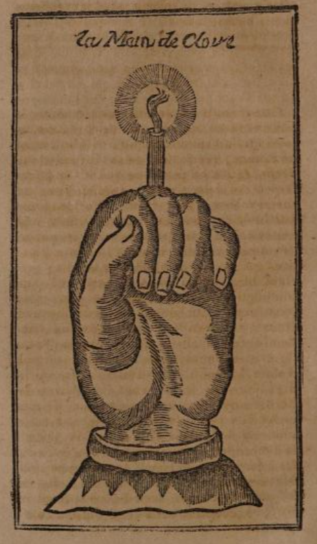

Hand of Glory#
The hand of glory is a fantastic device that can be used by thieves to keep people asleep as they go about their nefarious business. How a hand of glory is made also contains a tale. A typical telling of the hand of glory story is as follows:
It’s a dark and stormy night and several travellers were gathered in a remote inn. There was a knock at the door — a beggar seeking shelter. He was welcomed in. Everyone settled down to sleep, except for the serving who had finished her chores and was struggling to to sleep. She noticed the beggar take something out of his bag - it looked like a candle in a misshapen candlestick. He lit the candle and muttered something “Let those who sleep, stay asleep”. He proceeded to go through everyone’s belongings. A thief. The girl went to raise a maser but he could not be woken. She went downstairs, and the robber heard her. As he tried to make his escape, she tried to douse the flame with water, with beer… ah, with milk. Folk were awoken, the robber caught and hung. The strange enchantment: a hand of glory, a candle in the hand of a dead man, cut from a corpse hanging on a gallows. In some tellings, the candle should be made from the fat of another hanged man. As a ward against the use of the hand of glory, the following is recommended: the application of an unguent composed of the gall of a black cat, the fat of a white hen, and the blood of a screech owl around the threshold of the door and other possible points of entry.
At the Oxford Storytelling Festival in 2022, I saw Nick Hennessey put the hand of glory to good effect as a frame tale around of set of beautifully linked inner tales with a fantastic twist revealed as a call-back. In the framing, all but one person falls asleep, and the thief character then begins to swap tales with the person who remained awake. The hand of glory might also be used more generally to flesh out a burglary sequence, as for example in the Knight of York when a burglar swaps the letter that would otherwise condemn the heroine to death.
One of the earliest references comes from 17th century English antiquary, John Aubrey:
Remaines of Gentilisme and Judaisme, John Aubrey, (1696)/1881
In Remaines of Gentilisme and Judaisme, John Aubrey, ed. J. Britten, 1881, p103 (Lansdowne Manuscript no. 231):
This brings to my remembrance a story that was generally believed when I was a Schooleboy (before the civill Warres) that Thieves when they broke open a house, would putt a Candle into a Dead man’s hand, and then the people in the Chamber would not awake. There is such a kind of story somewhere amongst the magical writers.
Another early reference appears courtesy of Petit Albert in 1765:
Main de Gloire, Petit Albert, 1765
In Secrets merveilleux de la magie naturelle et cabalistique du Petit Albert (translated from the original Latin of Albertus Parvus Lucius), Petit Albert, 1765, p84-6:
De la main de gloire dont se servent les scélérats , voleurs, pour entrer dans les maisons de nuit, sans empéchement.

J’avoueque je n’ai jamais éprouvéle secret de la main de gloire; mais j’ai assisté trois foisau jugement défivitif de certains scélérats qui confessèrent à la torture s’être servis de la main de gloire dans les vols qu’ils avaient faits; et comme dens l’interrogatoire, on leur demanda ce que c’était , et comme ils l’avaient eue , et quel en était l’ussge, ils répondirent premiérement, que l’usage de la main de gloire était destupéfier et derendre immobiles ceux à qui on la présentait; en sorte qu’ils ne pouvaient non plus branler que s’ils étaient morts : secondement , que c’était la main d’un pendu ; troisiémement, qu’il fallait la préparer de la manière suivante. On prend la main droite ou la gauche d’un pendu exposé sur les grands chemins ; on l’enveloppe dans un morceau de drap mortuaire, dans lequel on la presse bien, pour lui faire rendrele peu de sang qui pourrait étre resté, puis on la met dans un vase de terre avec du zimet , du salpétre, du sel et du poivre long, le tout bien pulvérisé : on la laisse durant quinze jours dans ce pot, puis l’ayant tirée , on l’expose au grand soleil de la canicule, jusqu’à ce qu’elle soit devenue bien sèche, et si le soleil ne suffit pas, on la met dans un four qui soit chauffé avec de la fougére et de la verveine ; puis l’on compose une espéce de chandelle avec de la graisse de pendu , de la cire vierge et du siasme de Laponie, et l’on se sert de cette main de gloire comme d’un chandelier pour tenir la chandelle ellumée , et dans tous les lieux où l’on va avec ce funeste instrument, ceux qui y sont demeurent immobiles: et sur ce qu’on leur demanda , s’il n’y avait point de reméde pour se garantir de ce prestige, ils dirent que la main de gloire devenait sans effet, et que les voleurs ne pouvaient s’en servir, si ou frottait le seuil de la porte de la maison ou les endroits par où ils peuvent entrer, avec un onguent composé de fiel de chat noir , de graisse de poule blanche et du sang de chouette ; et qu’il fallait que cette coufection fût faite dans le temps de la canicule.
In Louis Liger’s La nouvelle maison rustique (“The New Rustic House, or General Economy of All Rural Assets”), a French guide book to rural life published in 1768, we see a mandrake root placed in a box described as a “hand of glory”, with the ability to propagate riches:
La nouvelle maison rustique, Louis Liger, 1768
In La nouvelle maison rustique, ou économie générale de tous les biens de campagne, Loius Liger, 1768, p62:
Les Charlatans ont long tems fait accroire que la racine de mandragore rellembloit parfaitement , celle du mandragore mâle d l’homme , 8c celle de la mandragore femelle a la femme : 8c. quoique ces racines ne falïent qu’endormir & engourdir confidérablement , ils faifoient accroire aux fors qu’elles étoient fi precieufes , qu elles ne pouvoient s’arracher qu’au péril de la vie, qu’auffi elles etoient un remede allure contre la ftérilité , de même que contre les douleurs de l’accouchement; qu’une main de gloire , c’eft-à-dire qu’une de ces racines enfermées myftérieufement dans une boëte , faifoic doubler tous les jours l’argent qu’on avoit , 8cc ; 8c même faute de mandragores qui font rares en France , ils vendoient des racines de coulevrées taillées en forme de mandragores , 8c lardées de grains d avoine , puis mifes pendant quinze ou vingt jours en terre , où l’avoine en germant , s incor-* pore dans les racines , 8c achèvent la reftemblance.
Charlatans have long led people to believe that the root of mandrake closely resembles that of a male human, and the root of female mandrake resembles that of a woman. Even though these roots only induce a considerable drowsiness and numbness, they made people believe they were so precious that they could only be extracted at the risk of one’s life. They also claimed that these roots were a remedy against sterility and labor pains. Additionally, they propagated the idea that a “Hand of Glory,” meaning one of these roots mysteriously enclosed in a box, could double one’s money every day, and so on. Moreover, due to the rarity of mandrakes in France, they sold roots of coltsfoot cut to resemble mandrakes and studded with oat grains. These roots were then buried for fifteen or twenty days, during which the oat germs incorporated into the roots, completing the resemblance.
[transl. ChatGPT]
A translation of Petit Albert’s review of the hand of glory appears in Grose’s Provincial Glossary of 1787. Note that a ward against the use of the hand of glory is also provided:
Petit Albert translation, Grose, 1787
In A Provincial Glossary: With a Collection of Local Proverbs, and Popular Superstitions. Francis Grose, 1787, p73-5:
To conclude this article, and my book, I shall transcribe a foreign piece of Superstition, firmly believed in many parts of France, Germany, and Spain. The account of it, and the mode of preparation, appears to have been given by a judge : in the latter, there is a striking resemblance to the charm in Macbeth.
Of the Hand of Glory, which is made use of by housebreakers to enter into houses at night, without fear of opposition.
I ACKNOWLEDGE that I never tried the secret of the Hand of Glory, but I have thrice ?? assisted at the definitive judgment of certain criminals, who, under the torture, confessed having used it. Being asked what it was, how they procured it, and what were its uses and properties ?- they answered, first, that the use of the Hand of Glory was to stupify those to whom it was presented, and to render them motionless, insomuch that they could not stir, any more than if they were dead ; secondly, that it was the hand of a hanged man ; and thirdly, that it must be prepared in the manner following :
Take the hand, left or right, of a person hanged and exposed on the highway; wrap it up in a piece of a shroud, or winding sheet, in which let it be well squeezed, to get out any small quantity of blood that may have remained in it; then put it into an earthen vessel, with zimat, saltpetre, salt, and long pepper, the whole well powdered ; leave it fifteen days in that vessel ; afterwards take it out, and expose it to the noontide sun in the dog days, till it is thoroughly dry ; and if the sun is not sufficient, put it into an oven heated with fern and vervain : then compose a kind of candle with the fat of a hanged man, virgin wax, and Sisame of Lapland. The Hand of Glory is used as a candleftick to hold this candle, when lighted. Its properties are that wheresoever any one goes. with this dreadful instrument, the persons to whom it is presented will be deprived of all power of motion. On being asked if there was no remedy, or antidote, to counteract this charm, they said the Hand of Glory would cease to take effect, and thieves could not make use of it, if the threshold of the door of the house, and other places by which they might enter, were anointed with an unguent composed of the gall of a black cat, the fat of a white hen, and the blood of a screech owl ; which mixture must necessarily be prepared during the dog days,
The “dog days” are the hot and humid days of summer.
Brand’s Observations on Popular Antiquities also quotes Grose’s translation:
Petit Albert, Grose’s translation in Brand, 1841
In Observations on popular antiquities : chiefly illustrating the origin of our vulgar customs, ceremonies, and superstitions, John Brand, 1841, p153-4](https://archive.org/details/observationsonp05elligoog/page/n166/mode/2up):
Grose has preserved a foreign piece of superstition, firmly believed in many parts of France, Germany, and Spain. He calls it, “Of the Hand of Glory, which is made use of by housebreakers to enter into houses at night without fear of opposition.
” I acknowledge that I never tried the secret of the hand of glory, but I have thrice assisted at the definitive judgment of certain criminals, who under the torture confessed having used it. Being asked what it was, how they procured it, and what were its uses and properties ? they answered, first, that the use of the Hand of Glory was to stupefy those to whom it was presented, and to render them motionless, insomuch that they could not stir any more than if they were dead ; secondly, that it was the hand of a hanged man ; and, thirdly, that it must be prepared in the manner following : — Take the hand, right or left, of a person hanged and exposed on the highway ; wrap it up in a piece of a shroud or winding-sheet, in which let it be well squeezed, to get out any small quantity of blood that may have remained in it : then put it into an earthern vessel, with zimat, salt-petre, salt, and long pepper, the whole well powdered ; leave it fifteen days in that vessel ; afterwards take it out, and expose it to the noon-tide sun in the dog-days, till it is thoroughly dry; and if the sun is not sufficient, put it into an oven heated with fern and vervain : then compose a kind of candle with the fat of a hanged man, virgin wax, and Sisame of Lapland. The Hand of Glory is used as a candlestick to hold this candle when lighted. Its properties are, that, wheresoever any one goes with this dreadful instrument, the persons to whom it is presented will be deprived of all power of motion. On being asked if there was no remedy, or antidote, to counteract this Charm, they said the hand of glory would cease to take effect, and thieves could not make use of it, if the threshold of the door of the house, and other places by which they might enter, were anointed with an unguent composed of the gall of a black cat, the fat of a white hen, and the blood of a screech-owl ; which mixture must necessarily be prepared during the dog-days.”
Grose observes that this account (literally translated from the French of ” Les Secrets du Petit Albert,” 12mo. Lion. 1751, p. 110) and the mode of preparation appear to have been given by a Judge. In the latter there is a striking resemblance to the Charm in ” Macbeth.”
The following paragraph in the ” Observer”, newspaper of January 16th, 1831, shows that the hand of glory is not unknown as a supposed Physical Charm in Ireland : ” On the night of the 3rd instant, some Irish thieves attempted to commit a robbery on the estate of Mr. Napper, of Lough-screw, county Meath, They entered the house armed with a Dead man’s Hand, with a lighted candle in it, believing in the superstitious notion that a candle placed in a dead man’s hand will not be seen by any but those by whom it is used ; and also that, if a candle in a dead hand be introduced into a house, it will prevent those who may be asleep frco awaking. The inmates, however, were alarmed, and the robbers fled, leaving the hand behind them.”
Another French description of the hand of glory can be found in the Dictionnaire Infernal of 1818. The previously offered ward against the use of the hand of glory is also described:
“Main de gloire”, Dictionnaire Infernal. 1818
In Dictionnaire infernal, J.-A.-S. (Jacques-Albin-Simon) Collin de Plancy, 1818, p34-6:
Main de gloire
Ce que led sorciers appellent main de gloire est la main d’un pendu, qu’on prépare de la sorte : on l’enveloppe dans un morceau de drap mortuaire, en la pressant bien, pour lui feire rendre le peu de sang qui pourrait y être resté; puis on la met dans un vase de terre, avec du sel, du saltpêtre, du zimat et du poivre long, le tout bien pulvérisé. On la laisse dans ce pot l’espace de quinze jours; après quoi on l’expose au grand soleil de la canicule, jusqu’à ce qu’elle soit parfaitement desséché: si le soleil ne suffit pas, on la met dans un four chauffé fougère et de verveine . On compose ensuite une espéce de chandelle avec de la graisse de pendu , de la cire vierge et du sésame de Laponie; et on se sert de la main de gloire, comme d’un chandelier, pour tenir cette merveilleuse chandelle allumée . Dans tous les lieux où l’on va avec ce funeste instrument, ceux qui y sont demeurent immobiles, et ne peuvent non plus remuer que s’ils étaient morts.
Il y a diverse manières de se servir de la main de gloire; les scélérats les connaissent bien; mais, depuis qu’on ne pend plus chez nous, ce doit être chose rare.
Deus magiciens, étant venus loger dans un cabaret pour y voler, demandèrent à passer la nuit auprès du feu, ce qu’ils obtinrent. Lorsque tout le monde fut couché, la servante, qui se défiait de la mine de deux voyageurs, alla regarder par un trou de la porte pour voir ce qu’ils gens de la maison qui ne dormit point; car les autres doigts étaient pour plonger dans le plus profond sommeil ceux qui étaient déjà endormis. Elle alla aússitôt à son maistre pour l’éveiller, mais elle ne put en venir à bout, non plus que des autres personnes du logis, qu’après avoir éteint les doigts alluminés, pendant que les faisaient. Elle vit qu’ils tiraient d’un sac la main d’un corps mort, qu’ils en oignaient ls doigts de je ne sais quel onguent, et les allumaient, åa l’exception d’un seul qu’ils ne purent allumer, quelques efforts qu’ils lissent, et cela parce que, comme elle le comprit, il n’y avait qu’elle des deux voleurs commencaient à faire leur coup dans une chambre voisine. Les deux meagiciens, se voyant découverts, s’enfuirent au plus vite, et on ne les trouva plus. [Delrio, Disquisitions magiques.]
Les voleurs ne peuvent se servir de la main de gloire, quand on a en la précapition de frotter le seuil de la porte avec un onguent composé de fiel de chat noir, de graisse de poule blanche et de sang de chouette, lequel onguent doit être fait dans la canicule. [Le solide trésor du Petit Albert.]
Translation of “Main de Gloire”, Dictionnaire Infernal, transl. ChatGPT
Hand of glory
What the sorcerers call the hand of glory is the hand of a hanged man, prepared in the following manner: it is wrapped in a piece of burial shroud, tightly squeezed to make it release any remaining blood; then it is placed in a clay pot along with salt, saltpeter, zinc oxide, and long pepper, all finely powdered. It is left in this pot for a fortnight; after which, it is exposed to the scorching sun of the dog days until it is perfectly dried. If the sun is not enough, it is put in an oven heated with fern and vervain. Next, a kind of candle is made using the fat of a hanged man, virgin wax, and Lapland sesame. The hand of glory is then used as a candlestick to hold this marvelous candle lit. Whenever this ominous instrument is taken to any place, those present remain motionless and cannot move any more than if they were dead.
There are various ways of using the hand of glory; the wicked know them well, but since hangings no longer take place among us, it must be a rare thing.
Two magicians, having come to stay at an inn to rob it, asked to spend the night by the fire, which they were granted. When everyone was asleep, the servant girl, who was suspicious of the looks of the two travelers, peered through a hole in the door to see what they were up to. The hand of glory had the power to plunge into the deepest sleep those who were already asleep. She immediately went to wake up her master, but she couldn’t manage to do so, nor could the other people in the house, until they extinguished the illuminated fingers, while they made great efforts. She saw that they took out from a bag the hand of a dead body, anointed its fingers with some unknown ointment, and lit them, except for one finger that they could not light, no matter how hard they tried. This was because, as she understood, only she remained awake while the two thieves started their operation in a nearby room. The two magicians, seeing they were discovered, fled as quickly as possible and were not found again. [Delrio, Magical Disquisitions.]
Thieves cannot make use of the hand of glory when the threshold of the door has been smeared with an ointment made of the bile of a black cat, the fat of a white hen, and the blood of an owl, which ointment must be prepared during the dog days. [The Solid Treasure of Petit Albert.]
Another French view of the Main de gloire is given in Charles Nisard’s Histoire des livres populaires of 1854:
Charles Nisard, Histoire des livres populaires, 1854
In Histoire des livres populaires ou de las littérature du colportage depuis le XV siècle, Charles Nisard, 1854, pp204-210:
Que dirai-je de la Main de gloire, autre talisman ? Si j’avais l’honneur d’être gouverneur de la Banque de France ou garde du trésor public , je vivrais dans un état de transes et d’insomnie perpétuel, en considérant à combien peu de chose il tiendrait qu’on ne dévalisât ma caisse, et l’impossibilité où je serais de m’y opposer. La garde elle-même qui veillerait à mes portes, se composât-elle de plusieurs bataillons, ne me rassurerait nullement, puisque ce talisman, au moyen duquel on déjouerait sa surveillance, la forcerait d’assister l’arme au bras à l’enlèvement de mes lingots. Je viens au fait.
De la Main de gloire dont se servent les scélérats voleurs pour entrer dans les maisons , de nuit , sans empêchement.
J’avoue que je n’ai jamais éprouvé le secret de la main de gloire ; mais j’ai assisté trois fois au jugement définitif de certains scélérats, qui confessèrent à la torture s’être servi de la main de gloire dans les vols qu’ils avaient faits ; et comme, dans l’interrogatoire, on leur demanda ce que c’était, et comment ils l’avaient eue, et quel en était l’usage, ils répondirent premièrement que l’usage de la main de gloire était de stupéfier et rendre immobiles ceux à qui on la présentait, en sorte qu’ils ne pouvaient non plus branler que s’ils étaient morts; secondement, que c’était la main d’un homme mis à mort en suite d’une condamnation juridique; troisièmement, qu’il fallait la préparer en la manière suivante : on prend la main droite ou la gauche d’un pendu ou d’un décapité, qu’on achète du bourreau ou du gardien de l’amphithéâtre où le corps aura été déposé après l’exécution ; on l’enveloppe dans un morceau de drap mortuaire , puis on la met dans un vase de terre avec du zimat, du salpêtre, du sel et du poivre long, le tout bien pulvérisé : on la laisse pendant quinze jours dans ce pot; puis, l’ayant tirée, on l’expose au grand soleil de la canicule, jusqu’à ce qu’elle soit devenue bien sèche; et, si le soleil ne suffit pas, on la met dans un four qui soit chauffé avec de la fougère ou de la verveine, puis l’on compose une espèce de chandelle avec de la graisse de supplicié, de la cire vierge et du sésame de Laponie, et l’on se sert de cette main de gloire comme d’un chandelier pour tenir cette chandelle allumée; et dans tous les lieux où l’on va avec ce funeste instrument, ceux qui y sont demeurent immobiles; et, sur ce qu’on leur demanda s’il n’y avait point de remède pour se garantir de ce prestige, ils dirent que la main de gloire devenait sans effet, et que les voleurs ne pourraient s’en servir, si on frottait le seuil de la porte de la maison, ou les autres endroits par où ils peuvent entrer , avec un onguent composé du fiel de chat noir, de graisse de poule blanche et du sang de chouette, et qu’il fallait que cette confection fut faite dans le temps de la canicule.
Cette main terrible , la voilà ! [Image follows, mirroring that used in Petit Albert.]
Je doute fort quelle soit de l’invention d’Albert , puisqu’il était trop honnête pour révéler, s’il l’eût connu , un pareil secret. C’est évidemment l’œuvre d’une civilisation plus avancée, el on raconte des traits de Cartouche et de Mandrin qui feraient croire volontiers que ce talisman ne leur «Hait pas inconnu, si même ils n’ont pas l’honneur de l’avoir inventé.
Au reste, les pertes que j’aurais faites par la grâce de cette main , je les réparerais facilement au moyen d’un autre secret, révélé par Cardan. Il s’agit de la découverte d’un trésor.
Il faut , dit-il , avoir une grosse chandelle i-orapowe rie suif humain, qu’on se procure dans les amphithéâtre» des hôpitaux où l’on étudie l’anatomic, et qu elle soit enclavée dan» un morceau de bois de coudrier fait en la manière qui est représentée dans la figure suivante ;
et si la chandelle. eUint allumée dans le lieu souterrain, y fait beaucoup de bruit en pétillant avec éclat, c’est une marque qu’il y a un trésor en et lieu, et plus on approchera du trésor, plus la chandelle pétillera, et enfin clic Vrtcindni quand on sci a tout a fait proche : il faut avoir d autres chandelles dan» des lanterne?», afin de ne pas demeurer sa us lumière. Quand on a de* raison* solides pour croire que ce sont des hommes défunts qui gardent les trésors, il e>t bon d’avoir des cierges bénits au lieu de chandelles communes , et les conjurer de la part de Dieu de déclarer si Ton peut faire quelque chose pour les mettre en lieu de bon repos , et il ne faudra jamais manquer d’exécuter ce qu’ils auront demandé.
Ou bien je procéderais incontinent à l’opération suivante : [Another omitted image.]
Vous prendre du soufre vif, du sel de nitre , du salpêtre , de chacun même quantité, c’est-à-dire environ quatre onces de chacun ; le tout étant bien pulvérisé sera mis dans une bosse ou grande cornue de verre fort , bien lutée et garnie de terre grasse ; on la mettra auprès d’un feu lent l’espace de deux heures , puis vous augmenterez le feu jusqu’à ce qu’il ne fasse aucutie fumée ; après la fumée sortira une flamme, hors du col de la bosse, le long des côtes, et cette flamme étant cessée , on verra le soufre précipité au fond , de couleur blanchâtre et fixe , on le tirera , et y joignant autant de sel ammoniac, on pilera et pulvérisera le tout ensemble bien subtilement , et on le fera sublimer en commençant par un feu lent, et augmentant toujours peu à peu , jusqu’à ce qu’il monte l’espace de quatre heures, puis on retirera du vase tout ce qui sera sublimé , aussi bien que les lies qui se trouveront au fond ; vous incorporerez le tout ensemble, et sublimerez derechef, continuant cette manière de sublimation jusqu’à six fois, après quoi le soufre étant au fond du vase, sera recueilli et pilé sur un marbre , en lieu humide , et il se convertira en huile , duquel vous mettrez six gouttes sur un ducat d’or fondu au creuset, et il se fera une huile qui, étant mise sur un marbre , se congèlera ; et , si vous mettez une partie de cette huile sur cinquante de mercure , préparé et purgé , vous aurez un or très-excellent.
En voilà assez , en voilà trop peut-être pour faire connaître ce pendant du Grand Albert , non moins absurde et aussi dangereux que lui. Je me suis étendu sur tous les deux d’autant plus volontiers, que si on les réimprime, c’est clandestinement, et que la police correctionnelle est chargée d’appliquer contre ceux qui les débiteraient , deux ou trois des plus sévères articles du Code pénal. Il serait donc à peu près impossible à la plupart des lecteurs de se les procurer; mais ils les connaîtront assez aux fragments que j’en ai détachés.
On tolère pourtant encore, je le suppose du moins , la vente d’une édition du Petit Albert , qui a pour titre : Les secrets merveilleux du Petit Albert y traduits exactement sur l’original latin intitulé : Alberti parvi Lucii; in -18, 144 pages, figures; Paris, chez les marchands de nouveautés, 1852. C’est l’abrégé du précédent. 11 y a en tête deux gravures. La première est assez confuse. Autant que j’en puis juger, cependant, elle paraît représenter le roi Salomon , revêtu d’une espèce de chlamyde et coiffé de la mitre orientale. D’une main il tient son glaive, dont la lame repose dans le fourreau , et il étend l’autre dans la direction d’un groupe de personnages que, à leur costume, on prendrait pour des prêtres juifs. Il est placé sur les marches d’un palais, et derrière lui s’élève un tourbillon de fumée, comme il s’en élève avant ou après une évocation du diable. La seconde gravure représente deux talismans. Ce sont deux affreux diables , dont la tête est toute hérissée de serpents, qui dansent sur la pointe d’un triangle, tenant d’une main une bourse pleine, et, de l’autre, une carte qui porte le nombre cabalistique 77. Entre ces deux diables on voit une vieille femme assise, occupée à friser les cheveux d’un autre diable couché à ses pieds. Audessus d’elle un magicien, à cheval sur un dragon ailé, traverse les airs. Le texte renferme aussi quelques vignettes analogues.
As well as describing the by now common an well-appreciated characteristics of the hand of the glory, the translation also describes how the hand of glory can be used as a “loot proximity detector”:
Main de gloire, Nisard’s Histoire des livres populaires , 1854 (transl. ChatGPT)
“History of Popular Books or Colportage Literature since the 15th Century.” * What shall I say about the *Hand of Glory, another talisman? If I had the honor of being the Governor of the Bank of France or the guardian of the public treasury, I would live in a perpetual state of trance and insomnia, considering how easily my cash box could be plundered and my inability to prevent it. Even if the guards at my doors were composed of several battalions, it would not reassure me, for this talisman, through which one could deceive their watchfulness, would compel them to assist in the removal of my ingots, with weapons in hand. Let me get to the point.
About the Hand of Glory that wicked thieves use to enter houses undisturbed at night.
I admit that I have never experienced the secret of the Hand of Glory, but I have witnessed the final judgment of certain villains three times, who confessed under torture to having used the Hand of Glory in their robberies. During the interrogations, they were asked what it was and how they obtained it, as well as its purpose. Firstly, they replied that the purpose of the Hand of Glory was to stupefy and immobilize those to whom it was presented, rendering them as motionless as if they were dead. Secondly, they claimed it was the hand of a man who had been executed following a legal sentence. Thirdly, they explained the preparation process as follows: the right or left hand of a hanged or beheaded person should be obtained from the executioner or the keeper of the amphitheater where the body was deposited after the execution. The hand should then be wrapped in a piece of mortuary shroud and placed in a earthenware pot with zinc oxide, saltpeter, salt, and long pepper, all finely powdered. It should be left in the pot for fifteen days; afterward, it should be exposed to the hot summer sun until thoroughly dried. If the sun is not enough, it should be placed in an oven heated with fern or verbena. Next, a kind of candle should be made with the fat of a hanged criminal, virgin wax, and Lapland sesame, and this Hand of Glory should be used as a candle holder to hold the lit candle. Wherever this dreadful instrument is taken, those present remain motionless. When asked if there was any remedy to protect oneself from this enchantment, they said the Hand of Glory would lose its effect and thieves would be unable to use it if the doorstep or other entry points of the house were smeared with an ointment made from the bile of a black cat, the fat of a white hen, and the blood of an owl. This concoction must be made during the hot summer.
Behold this terrible hand! [Image follows, mirroring that used in Petit Albert.]
I strongly doubt that it is Albert’s invention, as he was too honorable to reveal such a secret if he knew it. Clearly, it is the work of a more advanced civilization, and stories of Cartouche and Mandrin suggest they were likely familiar with this talisman, if not its inventors.
Nevertheless, any losses I might suffer due to this hand’s power could easily be compensated by another secret revealed by Cardan. It concerns the discovery of a treasure.
According to him, one must have a large candle made of human tallow, which can be obtained from the amphitheaters of hospitals where anatomy is studied. This candle should be encased in a piece of hazelwood as shown in the following figure:
[The figure is not described in the text, and it’s omitted from this translation.]
If the candle, when lit in an underground location, makes a lot of noise and crackles brightly, it indicates the presence of a treasure in that place. The closer one gets to the treasure, the more the candle crackles, until it becomes very loud when one is very close to the treasure. It is advisable to have other candles in lanterns to avoid being without light. When there are solid reasons to believe that deceased individuals guard the treasure, it is good to have blessed candles instead of regular ones and to conjure them in the name of God to declare if anything can be done to give them peace. One must never fail to carry out their requests.
Alternatively, I would proceed immediately with the following operation:
Take equal quantities of brimstone (sulfur), nitre (potassium nitrate), and saltpeter (potassium nitrate), approximately four ounces of each. Grind them finely and place them in a hump or large strong glass retort, securely sealed and coated with greasy clay. Put it next to a slow fire for two hours, then increase the heat until no smoke is produced. After the smoke, a flame will emerge from the neck of the retort along the sides. Once the flame subsides, you will see the precipitated sulfur at the bottom, of a whitish and fixed color. Extract the sulfur and add an equal amount of ammonium chloride (sal ammoniac), then grind and pulverize everything together very finely. Sublime it by starting with a slow fire and gradually increasing it for about four hours. Then remove from the vessel whatever is sublimated, as well as the dregs found at the bottom. Mix everything together and sublime it again, continuing this process six times. Afterward, the sulfur at the bottom of the vessel will be collected and ground on a wet marble, converting it into oil. If you put six drops of this oil on a melted gold ducat in a crucible, it will form an oil that, when placed on a marble, will freeze. If you place a portion of this oil on fifty portions of prepared and purified mercury, you will obtain excellent gold.
That is enough, perhaps even too much, to reveal this part of the Grand Albert, which is no less absurd and dangerous than the rest. I have expounded on both parts all the more willingly because if they were to be reprinted, it would be done clandestinely, and those who distribute them would face severe penalties under the Penal Code. Therefore, it would be nearly impossible for most readers to obtain them, but they will learn enough from the fragments I have extracted.
Yet, the sale of an edition of Petit Albert is still tolerated, or so I suppose. This edition is titled: Les secrets merveilleux du Petit Albert y traduits exactement sur l’original latin intitulé: Alberti parvi Lucii; in -18, 144 pages, figures; Paris, chez les marchands de nouveautés, 1852. It is an abridged version of the previous work. There are two engravings at the beginning. The first one is quite confusing. As far as I can judge, it appears to represent King Solomon, dressed in a kind of chlamys and wearing an Eastern mitre. In one hand, he holds his sword, with the blade resting in the scabbard, and with the other hand, he points in the direction of a group of figures who, judging from their attire, could be taken for Jewish priests. He is depicted on the steps of a palace, and behind him, a whirl of smoke rises, similar to the kind that appears before or after a devilish evocation. The second engraving shows two talismans. These are two frightful devils, their heads bristling with snakes, dancing on the tip of a triangle. They hold a full purse in one hand and a card bearing the cabalistic number 77 in the other. Between these two devils, there is an old woman sitting, occupied with curling the hair of another devil lying at her feet. Above her, a magician riding a winged dragon crosses the skies. The text also contains several similar vignettes.
A news report, from 1831, of a hand of glory apparently being used in a robbery in Ireland was syndicated variously in 1841 as an example of the ignorance of the Irish peasantry:
March of Intellect, The Globe, March, 1831
In the Globe, Tuesday, 11th January 1831, p3:
IRELAND
…
March of Intellect
On the night of Monday, the 3d inst., a robbery, or rather an attempt at robbery, attended with some highly illustrative Irish circumstances, took place on the estate of Mr. Napper, of Loughcrew. in the county Meath. To explain these, however, to our English readers, it is necessary to premise that it is an opinion very prevalent among the “finest pisantry in the world” that a lighted candle placed in a dead man’s hand, will not be seen by any but those by whom it is used; and also. that if a candle in a dead hand be introduced into a house, it will prevent those who may be asleep from awaking ! Under the influence of this superstition, a party, on Monday night, armed with a dead man’s hand and lighted candle, attacked the house of Mrs. Leonard (the mother of the priest) in the town of Oldcastle; but, unfortunately for the credit of the clan, the inmates were alarmed, and the robbers fled, leaving the hand behind them. Dublin Warder.
*The same report appears elsewhere under a different heading. For example, in the Chester Courant of Tuesday, 18th January, 1831 under the heading Singular Superstition.
In passing, it’s worth noting that the hand of glory also makes an appearances in the Nurse’s Story in Ingoldsby Legends.
The Nurse’s Story, Ingoldsby Legends, 1843
In The Ingoldsby Legends, or Mirth and Marvels, Thomas Ingoldsby,1843, p55:
The Nurse’s Story
“Malefica quaedam auguriatrix in Anglia fuit, quam demooes horribilitet •ztraxeiunt, et imponentes super equum terribilem, per aera rapuer ur.t . CUmoresque terribiles (ut ferunt) per quatuor ferme miliana audiebantur.” Nuremb. Chron.
[A certain malevolent witch lived in England, whom demons dreadfully tormented, and placing her on a terrifying horse, they carried her through the air. Terrible sounds (as they say) were heard for nearly four miles. (transl. ChatGPT)]
On the lone bleak moor,
At the midnight hour,
Beneath the Gallows Tree,
Hand in hand
The Murderers stand
By one, by two, by three !
And the Moon that night
With a grey, cold light
Each baleful object tips;
One half of her form
Is seen through the storm.
The other half’s hid in Eclipse.
And the cold Wind howls,
And the Thunder growls,
And the Lightning is broad and bright;
And altogether
It ‘s very bad weather,
And an unpleasant sort of a night !
“Now mount who list,
And close by the wrist
Sever me quickly the Dead Man’s fist !—
Now climb who dare
“Where he swings in air,
And pluck me five locks of the Dead Man’s hair ! “
…
Oh ! ‘tis a horrible sight to view.
In that horrible hovel, that horrible crew,
By the pale blue glare of that flickering flame,
Doing the deed that hath never a name !
‘Tis awful to hear
Those words of fear !
The pray’r mutter’d backwards, and said with a sneer
(Matthew Hopkins himself has assured us that when
A witch says her pray’rsj she begins with ” Amen.”)—
— Tis awful to see
On that Old Woman’s knee
The dead, shrivell’d hand, as she clasps it with glee
And now, with care,
The five locks of hair
From the skull of the Gentleman dangling up there,
With the grease and the fat
Of a black Tom Cat
She hastens to mix,
And to twist into wicks.
And one on the thumb, and each finger to fix. —
(For another receipt the same charm to prepare,
Consult Mr. Ainsworth and Petit Albert.)
” Now open lock
To the Dead Man’s knock !
Fly bolt, and bar, and band !—
Nor move, nor swerve
Joint, muscle, or nerve,
At the spell of the Dead Man’s hand !
Sleep all who sleep ! —
Wake all who wake ! —
And be as the Dead for the Dead Man’s sake !! “
…
…
The unholy words of the Dead Man’s spell !
“Open lock
To the Dead Man’s knock !
Fly bolt, and bar, and band !
Nor move, nor swerve
Joint, muscle, or nerve.
At the spell of the Dead Man’s hand !
Sleep all who sleep! — Wake all who wake ! —
But be as the Dead for the Dead Man’s sake !! “
Now lock, nor bolt, nor bar avails,
Nor stout oak panel thick-studded with nails.
Heavy and harsh the hinges creak.
Though they had been oil’d in the course of the week ;
The door opens wide as wide may be,
And there they stand.
That murderous band.
Let by the light of that Glorious Hand,
By one ! — by two ! — by three !
They have pass’d through the porch, they have pass’d through the hall,
Where the Porter sat snoring against the wall ;
The very snore froze
In his very snub nose,
You’d have verily deem’d he had snored his last
When the Glorious Hand by the side of him past !
As well as a thief’s hand or finger, Benjamin Thorpe suggests in volume 3 of his Northern Mythology series of 1852, that a foot could also work:
Thief’s Foot | Hand | Finger, Northern Mythology, 1852
In Northern Mythology, Comprising The Principal Popular Traditions And Superstitions Of Scandinavia, North Germany And The Netherlands, Benjamin Thorpe, Vol III, 1852, p274-5:
THIEF’S FOOT.— THIEF’S HAND.— THIEF’S FINGER.
In West Flanders, not far from Bailleul, a thief was taken, on whom was found the foot of one that had been hanged, which he used for the purpose of putting people to sleep.
Two fellows once came to Huy, who pretended to be exceedingly fatigued, and when they had supped would not retire to a sleeping room, but begged their host would allow them to take a nap on the hearth. But the maid- servant, who did not like the looks of the two guests, remained by the kitchen door and peeped through a chink, when she saw that one of them drew a thief s hand from his pocket, the fingers of which, after having rubbed them with an ointment, he lighted, and they all burned except one. Again they held this finger to the fire, but still it would not burn, at which they appeared much surprised, and one said : ” There must surely be some one in the house who is not yet asleep.” They then hung the hand with its four burning fingers by the chimney, and went out to call their associates. But the maid followed them instantly and made the door fast, then ran up-stairs, where the landlord slept, that she might wake him, but was unable, notwithstanding all her shaking and calling.
In the mean time the thieves had returned and were endeavouring to enter the house by a window, but the maid cast them down from the ladder. They then took a different course, and would have forced an entrance, had it not occurred to the maid that the burning fingers might probably be the cause of her master’s profound sleep. Impressed with this idea she ran to the kitchen, and blew them out, when the master and his men-servants instantly awoke, and soon drove away the robbers.
In the village of Alveringen there formerly lived a sorceress, who had a thief’s finger, over which nine masses had been read. For being acquainted with the sacristan, she had wrapt it in a cloth and laid it on the altar, telling him it was a relic. With this finger she performed wonderful things. When she had lighted it — for such fingers burn like a candle — every one in the house where she might be was put to sleep. She would then steal money and everything else that she fancied, until she was at last detected, and the stolen property found in her possession
If John Fiske is to be believed, in Myths And Mythmakers, 1872, the hand of glory is actually a macabre corruption of an invisibility charm known as a the Icelandic schamir, or “raven stone”:
“Raven Stone” (invisibility talisman), Myths and Mythmakers, Fiske, 1872
In Myths And Mythmakers Old Tales And Superstitions Interpreted By Comparative Mythology, John Fiske, 1872, p60-62:
In the Icelandic and Pomeranian myths the schamir, or ” raven-stone,” also renders its possessor invisible, a property which it shares with one of the treasure-finding plants, the fern. ['We have the receipt of fern-seed. We walk invisible. ' Shakespeare, Henry IV. See Ralston, Songs of the Russian People 9 p. 98. According to one North German tradition, the luck-flower also will make its finder invisible at pleasure. But, as the myth shrewdly adds, it is absolutely essential that the flower be found by accident : he who seeks for it never finds it! Thus all cavils are skilfully forestalled, even if not satisfactorily disposed of. The same kind of reasoning is favoured by our modern dealers in mystery : somehow the conditions always are askew whenever a scientific observer wishes to test their pretensions. In this respect it resembles the ring of Gyges, as in its divining and rock-splitting qualities it resembles that other ring which the African magician gave to Aladdin, to enable him to descend into the cavern where stood the wonderful lamp.]
In the north of Europe schamir appears strangely and grotesquely metamorphosed. The hand of a man that has been hanged, when dried and prepared with certain weird unguents and set on fire, is known as the Hand of Glory ; and as it not only bursts open all safe locks, but also lulls to sleep all persons within the circle of its influence, it is of course invaluable to thieves and burglars. I quote the following story from Thorpe’s ” Northern Mythology : ” Two fellows once came to Huy, who pretended to be exceedingly fatigued, and when they had supped would not retire to a sleeping-room, but begged their host would allow them to take a nap on the hearth. But the maidservant, who did not like the looks of the two guests, remained by the kitchen door and peeped through a chink, when she saw that one of them drew a thief’s hand from his pocket, the fingers of which, after having’ rubbed them with an ointment, he lighted, and they all burned except one. Again they held this finger to the fire, but still it would not burn, at which they appeared much surprised, and one said, c There must surely be some one in the house who is not yet asleep/ They then hung the fyand with its four burning fingers by the chimney, and went out to call their associates. But the maid followed them instantly and made the door fast, then ran upstairs, where the landlord slept, that she might wake him, but was unable, notwithstanding all her shaking and calling. In the mean time the thieves had returned and were endeavouring to enter the house by a window, but the maid cast them down from the ladder. They then took a different course, and would have forced an entrance, had it not occurred to the maid that the burning fingers might probably be the cause of her master’s profound sleep. Impressed with this idea she ran to the kitchen and blew them out, when the master and his men-servants instantly awoke, and soon drove away the robbers.” The same event is said to have occurred at Stainmore in England ; and Torquemada relates of Mexican thieves that they carry with them the left hand of a woman who has died in her first childbed, before which talisman all bolts yield and all opposition is benumbed. In 1831 “some Irish thieves attempted to commit a robbery on the estate of Mr. Naper, of Loughcrew, county Meath. They entered the house armed with a dead man’s hand with a lighted candle in it, believing in the superstitious notion that a candle placed in a dead man’s hand will not be seen by any but those by whom it is used ; and also that if a candle in a dead hand be introduced into a house, it will prevent those who may be asleep from awaking. The inmates, however, were alarmed, and the robbers fled, leaving the hand behind them.” [ Henderson, Folk-Lore of the Northern Counties of England, p. 202. ]
The naïveté of the believers in the hand of glory superstition was also implied by it’s inclusion in John Timbs’ Popular Errors of 1852:
Things Not Generally Known / Popular Errors, John Timbs, 1858
In Things Not Generally Known: Popular Errors Explained & Illustrated, John Timbs, 1858, p139-140:
” THE HAND OF GLORY.”
In the middle ages, in addition to the belief of numerous charms and talismans to protect from disease and accident, many of which were perfectly impious, some singular figures were constructed for the strangest purposes ; one, for instance, the Hand of Glory, as it was called, was supposed to be a sure protection to robbers when committing their crimes. It is thus described :
The Hand of Glory possesses much more dangerous properties, if it be true that robbers avail themselves of its power to cause sleep to overcome all the inmates of a house, that they may be enabled to plunder with impunity. This is effected by holding tho charm over each person. This talisman is the hand of a robber executed for his crime : the blood is to be first extracted, and then it is to be prepared with saltpetre and pepper, and dried in the sun ; when perfectly dry, it is used as a candlestick, in which a candle is placed formed of the fat of tho culprit, white wax, and sesame seed.
The belief in most of these strange and ridiculous errors existed much longer than it otherwise would have done, from the Artificial importance with which they were clothed in consequence of the solemn endeavours of some learned writers to reason upon their properties, instead of treating the subject with the contempt it deserved.
It may be remarked, that the Arabs have great faith in certain superstitious charms, which they suppose will protect their horses from accidents. They use talismans written on a piece of triangular paper, which are put into a leathern purse of the same shape, and fastened round the animal’s neck, as a defence against witchcraft from unlucky eyes. A couple of boar’s tusks, joined at the extremities by a silver ring, are suspended from their mane to keep them from the farcy. — Crichton’s Arabia.
William Henderson, in his Notes on the Folklore of the Northern Counties of 1866 addresses the superstition of the hand of glory in various forms:
William Henderson, Notes on the Folklore of the Northern Counties, 1866
In Notes on the Folklore of the Northern Counties of England and the Borders, William Henderson, with an appendix on Household Tales by Sabine Baring-Gould, 1866, p200-206:
Wild and varied as I know the superstitions of my native county to be, I must plead guilty to some astonishment at discovering among them what Brand calls ‘ the foreign superstition of the Hand of Glory, once firmly believed in many parts of France, Germany, and Spain.’ Sir Walter Scott brings it forward as a foreign charm. It is the German adventurer, Dousterswivel, who is conversant with it, and who (in the ‘ Antiquary’) describes it thus racily to the assembled party among the ruins at St. Ruth’s:— ‘ Why, my goot master Oldenbuck, you will only laugh at me. But de Hand of Glory is very well known in de countries where your worthy progenitors did live; and it is a hand cut off from a dead man as has been hanged for murder, and dried very nice in de shmoke of juniper-wood; and if you put a little of what you call yew wid your juniper, it will not be any better— that is, it will not be no worse; then you do take something of de fatsh of de bear, and of de badger, and of de great eber (as you do call de grand boar), and of de little sucking child as has not been christened (for dat is very essentials) ; and you do make a candle, and put into de ‘Hand of Glory at de proper hour and minute, with de proper ceremonish; and he who seeksh for treasuresh shall never find none at all.’ [ The Hand of Glory is the hand of a man who has been hung, and is prepared in the following manner. Wrap the hand in a piece of winding-sheet, drawing it tight so as to squeeze out the little blood which may remain ; then place it in an earthenware vessel with saltpetre, salt, and long pepper, all carefully and thoroughly powdered. Let it remain a fortnight in this pickle till it is well dried, then expose it to the sun in the dog-days till it is completely parched, or, if the sun be not powerful enough, dry it in an oven heated with vervain and fern. Next make a candle with the fat of a hung man, virgin wax, and Lapland sesame. The Hand of Glory is used to hold this candle when it is lighted. Wherever one goes with this contrivance, those it approaches are rendered incapable of motion as though they were dead. (Colin De Plancy, Dictionnaire Infernal, 1818).—S. B. G.] Dousterswivel asserts that the monks used the Hand of Glory as a spell to conceal treasures. Southey places it in the hands of the enchanter-king Mohareb, when he would lull to sleep Yohak, the giant keeper of the caves of Babylon—
Thus he said,
And from his wallet drew a human hand,
Shrivelled, and dry, and black.
And fitting, as he spake A taper in his hold,
Pursued: ‘ A murderer on the stake had died;
I drove the vulture from his limbs, and lopt
The hand that did the murder, and drew up
The tendon-strings to close its grasp.
And in the sun and wind Parched it, nine weeks exposed.
The taper …. but not here the place to impart
Nor hast thou undergone the rites,
That fit thee to partake the mystery.
Look ! it bums clear, but with the air around,
Its dead ingredients mingle deathiness.
This when the keeper of the cave shall feel,
Maugre the doom of heaven,
The salutary spell
Shall lull his penal agony to sleep,
And leave the passage free.’ [1 Thalaba the Destroyer, Book V.]
While Grose gives a full account of it, as used by French housebreakers, in a translation from the French of ‘ Les Secrets du Petit Albert’ (a.d. 1750), alleging that its use was to stupefy those to whom it was presented, and to render them motionless, so that they could not stir any more than if they were dead. There is one instance on record of its use in Ireland : ‘ On the night of the 3rd instant (January 1831), some Irish thieves attempted to commit a robbery on the estate of Mr. Naper, of Loughcrew, county Meath. They entered the bouse, armed with a dead man’s hand with a lighted candle in it, believing in the superstitious notion that a candle placed in a dead man’s hand will not be seen by any but those by whom it is used; and also that if a candle in a dead hand be introduced into a house it will prevent those who may be asleep from awaking. The inmates, however, were alarmed, and the robbers fled, leaving the hand behind them.’
The Stainmore story, however, which has with difficulty been rescued from oblivion by the persevering kindness of friends, is much richer in detail. It is as follows:— One evening, between the years 1790 and 1800, a traveller, dressed in woman’s clothes, arrived at the Old Spital Inn, the place where the mailcoach changed horses, in High Spital, on Bowes Moor. The traveller begged to stay all night, but had to go away so early in the morning, that if a mouthful of food were set ready for breakfast, there was no need the family should be disturbed by her departure. The people of the house, however, arranged that a servant-maid should sit up till the stranger was out of the premises, and then went to bed themselves. The girl lay down for a nap on the long settle by the fire, but before she shut her eyes she took a good look at the traveller, who was sitting on the opposite side of the hearth, and espied a pair of man’s trousers peeping out from under the gown. All inclination for sleep was now gone; however, with great self-command, she feigned it, closed her eyes, and even began to snore. On this the traveller got up, pulled out of his pocket a dead man’s hand, fitted a candle to it, lighted the candle, and passed hand and candle several times before the servant-girl’s face, saying as be did so, ‘ Let those who are asleep be asleep, and let those who are awake be awake.’ This done, he placed the light on the table, opened the outer door, went down two or three of the steps which led from the house to the road, and began to whistle for his companions. The girl (who had hitherto had presence of mind enough to remain perfectly quiet) now jumped up, rushed behind the ruffian, and pushed him down the steps. She then shut the door, locked it, and ran upstairs to try and wake the family, but without success: calling, shouting, and shaking were alike in vain. The poor girl was in despair, for she heard the traveller and his comrades outside the house. So she ran down again, seized a bowl of blue (i.e. skimmed milk), and threw it over the hand and candle; after which she went upstairs again, and awoke the sleepers without any difficulty. The landlord’s son went to the window, and asked the men outside what they wanted. They answered that if the dead man’s hand were but given them, they would go away quietly, and do no harm to anyone. This he refused, and fired among them, and the shot must have taken effect, for in the morning stains of blood were traced to a considerable distance.
These circumstances were related to my informant, Mr. Charles Wastell, in the spring of 1861, by an old woman named Bella Parkin, who resided close to High Spital, and was actually the daughter of the courageous servant-girl.
It is interesting to compare them with the following narrations, communicated to me by the Rev. S. Baring Gould:—’ Two magicians having come to lodge in a publichouse with a view to robbing it, asked permission to pass the night by the fire and obtained it. When the house was quiet, the servant-girl, suspecting mischief, crept downstairs and looked through the keyhole. She saw the men open a sack, and take out a dry withered hand. They anointed the fingers with some unguent, and lighted them. Each finger flamed, but the thumb they could not light; that was because one of the household was not asleep. The girl hastened to her master, but found it impossible to arouse him. She tried every other sleeper, but could not break the charmed sleep. At last, stealing down into the kitchen, while the thieves were busy over her master’s strongbox, she secured the band, blew out the flames, and at once the whole household was aroused.’ [Delvio. See also Thorpe's Mythology, vol. iii. p. 274.]
But the next story bears a closer resemblance to the Stainmore narrative. One dark night, when all was shut up, there came a tap at the door of a lone inn in the middle of a barren moor. The door was opened, and there stood without, shivering and shaking, a poor beggar, his rags soaked with rain, and his hands white with cold. He asked piteously for a lodging, and it was cheerfully granted him ; there was not a spare bed in the house, but he could lie on the mat before the kitchen-fire, and welcome.
So this was settled, and everyone in the house went to bed except the cook, who from the back kitchen could see into the large room through a pane of glass let into the door. She watched the beggar, and saw him, as soon as he was left alone, draw himself up from the floor, seat himself at the table, extract from his pocket a brown withered human hand, and set it upright in the candlestick. He then anointed the fingers, and applying a match to them, they began to flame. Filled with horror, the cook rushed up the backstairs, and endeavoured to arouse her master and the men of the house. But all was in vain— they slept a charmed sleep; so in despair she hastened down again, and placed herself at her post of observation.
She saw the fingers of the hand flaming, but the thumb remained unlighted, because one inmate of the house was awake. The beggar was busy collecting the valuables around him into a large sack, and having taken all he cared for in the large room, he entered another. On this the woman ran in, and, seizing the light, tried to extinguish the flames. But this was not so easy. She blew at them, but they burnt on as before. She poured the dregs of a beer-jug over them, but they blazed up the brighter. As a last resource, she caught up a jug of milk, and dashed it over the four lambent flames, and they died out at once. Uttering a loud cry, she rushed to the door of the apartment the beggar had entered, and locked it. The whole family was roused, and the thief easily secured and hanged. This tale is told in Northumberland.
A variation of the same belief prevailed in Belgium. Not far from Bailleul, in West Flanders, a thief was taken, on whom was found the foot of a man who had been hanged, which he used for the purpose of putting people to sleep. Again, in the village of Alveringen, there formerly lived a sorceress who had a thief’s finger over which nine masses had been said; for, being acquainted with the sacristan, she had wrapped it in a cloth and laid it on the altar, telling him it was a relic. With this linger she performed wonderful things. When she had lighted it— for such fingers burn like a candle — everyone in the house where she might be was put to sleep. She would then steal money and everything else she fancied, till at last she was detected, and the stolen property found in her possession. [Thorpe's Mythology, vol. iii. pp. 274, 275.]
In a note to the passage quoted above from Southey’s ‘ Thalaba,’ it is mentioned that a somewhat similar practice is recorded by Torquemada of Mexican thieves. They used to carry with them the left hand and arm of a woman who had died in her first childbed ; with this they twice struck the ground before the house which they designed to rob, and the door twice, and the threshold twice: the inhabitants, if asleep, were hindered from waking by this charm, and if awake, were stupefied and deprived of speech and motion while the fatal arm was in the house.
[Much of this account was reproduced verbatim in E. S. Hartland’s English fairy and other folk tales, 1906?, p196-199.]
Baring Gould’s narration would seem to come from Dictionnaire Infernal.
Warning
The 1866 edition of William Henderson’s Notes on the Folklore of the Northern Counties of England and the Borders also includes an appendix on “Household Tales” by Sabine Baring Gould. The appendix was dropped from later editions. A copy of the 1866 version was held by the Internet Archive, but it now seems to have been taken down; a version can still be found on Google Books.
Baring-Gouldd’s appendix includes a collected version of the tale.
Sabine Baring-Gould also relates a collected telling of the hand of glory story in his appendix to Notes on the Folklore of the Northern Counties.
The Hand of Glory (Yorkshire), S. Baring Gould, 1866
In Notes on the Folklore of the Northern Counties of England and the Borders. William Henderson, as part of the appendix on Household Tales by Sabine Baring-Gould, 1866, p332-3:
THE HAND OF GLORY. ( Yorkshire.)
One dark night, after the house had been closed, there came a tap at the door of a lone inn, in the midst of a barren moor.
The door was opened , and there stood without, shivering and shaking, a poor beggar, his rags soaked with rain and his hands white with cold . He asked piteously for a lodging,, and it was cheerfully granted him ; though there was not a spare bed in the house, he could lie along on the mat before the kitchen fire, and welcome.
All in the house went to bed except the cook, who from her kitchen could see into the large room through a small pane of glass let into the door. When every one save the beggar was out of the room , she observed the man draw himself up from the floor, seat himself at the table, extract a brown withered human hand from his pocket, and set it upright in the candle stick. He then anointed the fingers, and applying a match to them, they began to flame. Filled with horror, the cook rushed up the backstairs, and endeavoured to arouse her master and the men of the house; but all in vain — they slept a charmed sleep ; and finding all her efforts ineffectual, she hastened down stairs again. Looking again through the small window , she observed the fingers of the hand flaming, but the thumb gave no light — this was because one of the inmates of the house was not asleep.
The beggar began collecting all the valuables of the house into a large sack , and having taken all that was worth taking in the large room , he entered another. The moment he was gone, the cook rushed in, and seizing the candle, attempted to extinguish the flames. She blew at them in vain ; she poured some drops from a beer -jug over them , and that made the fingers burn the brighter ; she cast some water upon them , but still without putting out the light ; as a last resource, she caught up a jug of milk , and dashing it over the four lambent flames, they were extinguished immediately.
Uttering a loud cry, she rushed to the door of the apartment the beggar had entered, and locked it. The whole house was aroused , and the thief secured and hung.
This is the same story which is told in Northumberland and elsewhere.
Local tellings of the hand of glory story appear as elaborated “collected” fictionalisation of local legends. For example, in Thomas and Katharine Macquoid’s About Yorkshire of 1891:
About Yorkshire, Thomas and Katharine Macquoid, 1894
In About Yorkshire, Thomas and Katharine Macquoid, 1894 p64-70:
On our return to Barnard Castle we heard a strange story of Stanmore, a wild stretch of moor to the west of Bowes.
A fragment of Rey-Cross is still said to exist on the waste ridge of this moor, near an inn called the ” Spital.” This cross was, according to tradition, the boundary between England and Scotland. Scott says in Rokeby —
” And the best of our nobles his bonnet will vail,
Who at Rere Cross on Stanmore meets Allen-a-Dale.”
This inn of Spital on Stanmore was kept, in the year 1797, by one George Alderson. He, his wife, and son managed the business of this lonely hostel themselves, with the help of a maid named Bella. The inn was a long, narrow building, and turned one end towards the great high road which crossed Stanmore on its way from York to Carlisle. The lower story of the house was used as stabling, for the stage-coaches changed horses at the inn and brought all the last news of the day. The upper part of the solid stone building was reached by a flight of ten or twelve stone steps leading up from the road to a stout oaken door, and the windows, deeply recessed in the thick walls, were strongly barred with iron. One cold October night the red curtains were drawn across the windows, and a huge log-fire sputtered and crackled on the broad hearth, and lighted up the faces of George Alderson and his son as they sat talking of their gains at the fair of Broughton Hill ; these gains, representing a large sum of money, being safely stowed away in a cupboard in the landlord’s bedroom.
Mrs. Alderson and Bella sat a little way off spinning by fire-light, for the last coach had gone by and the house door was barred and bolted for the night. Outside the wind and rain were having a battle ; there came fierce gusts which made the old casements rattle and stirred the red curtains, and then a torrent of rain swept smartly across the window, striking the glass so angrily that it seemed as if the small panes must shatter under its violence.
Into the midst of this fitful disturbance, only varied by the men’s voices beside the hearth, there came a knock at the door.
” Open t’ door, lass,” said Alderson. ” Ah wadna keep a dog out sik a neet as this.”
” Eh ! best slacken t’ chain, lass,” said the more cautious landlady.
The girl went to the door, but when she saw that the visitor was an old woman she opened the door wide and bade her come in. There entered a bent figure dressed in a long cloak and hood ; this last was drawn over her face ; and, as she walked feebly to the arm- chair which Alderson pushed forward, the rain streamed from her clothing and made a pool on the oaken floor. She shivered violently, but refused to take off her cloak and have it dried. She also refused the offer of food or a bed. She said she was on her way to the north, and must start as soon as there was daylight. All she wanted was a rest beside the fire : she could get the sleep she needed in her arm-chair
The innkeeper and his wife were well used to wayfarers, and they soon said ” Good-night ” and went to bed ; so did their son. Bella was left alone with the shivering old woman. The girl had kept silence, but now she put her wheel away in its corner and began to talk. She only got surly answers, and although the voice was low and subdued, the girl fancied that it did not sound like a woman’s. Presently the wayfarer stretched out her feet to warm them, and Bella’s quick eyes saw under the hem of the skirts that the stranger wore horseman’s gaiters. The girl felt uneasy, and, instead of going to bed, she resolved to stay up and watch.
” Ah’m sleepy,” she said, gaping, but the figure in the chair made no answer. Presently Bella lay down on a long settle beyond the range of the firelight and watched the stranger while she pretended to fall asleep. All at once the figure in the chair stirred, raised its head, and listened ; then it rose slowly to its feet, no longer bent, but tall and powerful-looking : it stood listening for some time. There was no sound but Bella’s heavy breathing and the wind and the rain beating on the windows. Then the woman took from the folds of her cloak a brown withered human hand ; next she produced a candle, lit it from the fire, and placed it in the hand. Bella’s heart beat so fast that she could hardly keep up the regular deep breathing of pretended sleep ; but now she saw the stranger coming towards her with this ghastly chandeHer, and she closed her lids tightly. She felt that the woman was bending over her, and that the light was passed slowly before her eyes, while these words were muttered in the strange masculine voice that had first roused her suspicions :—
” Let those who rest more deeply sleep ;
Let those awake their vigils keep.”
The light moved away, and through her eyelashes Bella saw that the woman’s back was turned to her, and that she was placing the hand in the middle of the long oak table, while she muttered this rhyme : —
” O Hand of Glory shed thy light ;
Direct us to our spoil to-night.”
Then she moved a few steps away and undrew the window-curtain. Coming back to the table she said : —
” Flash out thy blaze, O skeleton hand,
And guide the feet of our trusty band.”
At once the light shot up a bright livid gleam, and the woman walked to the door ; she took down the bar, drew back the bolts, unfastened the chain, and Bella felt a keen blast of cold night air rush in as the door was flung open. She kept her eyes closed, however, for the woman at that moment looked back at her, and then drawing something from her gown she blew a long shrill whistle ; she then went out at the door and down a few of the steps, stopped and whistled again, but the next moment a vigorous push sent her spinning down the steps on to the road below — the door was closed, barred, and bolted, and Bella almost flew to her master’s bedroom and tried to wake him. In vain. He and his wife slept on, while their snores sounded loudly through the house… . The girl felt frantic… . She then tried to rouse young Alderson, but he slept as if in a trance. Now a fierce battery on the door and cries below the windows told that the band had arrived.
A new thought came to Bella. She ran back to the kitchen. There was the Hand of Glory, still burning with a wonderful light. The girl caught up a cup of milk that stood on the table, dashed it on the flame and extinguished it — in one moment, as it seemed to her, she heard footsteps coming from the bedrooms, and George Alderson and his son rushed into the room with firearms in their hands.
As soon as the robbers heard his voice bidding them depart they summoned the landlord to open his doors and produce his valuables. Meanwhile young Alderson had opened the window, and for answer he fired his blunderbuss down among the men below. There was a groan — a fall — then a pause, and, as it seemed to the besieged, some sort of discussion. Then a voice called out, ” Give up the Hand of Glory, and we will not harm you.”
For answer young Alderson fired again, and the party drew off. Seemingly they had trusted entirely to the Hand of Glory, or else they feared a long resistance, for no further attack was made : the withered hand remained in possession of the Aldersons for six- teen years after.
This story was told to my informant, Mr. Atkinson, by Bella herself when she was quite an old woman.
This was also reprinted in the Shipley Times and Express of Friday, October 26th, 1906, p2
Mentions of the Hand of Glory in Local Newspaper Folklore and Tradition Columns#
As local customs and folklore columns became popular in the local newspapers of the latter part of the 19th century, it is not surprising that the hand of glory started to make an appearance in some of them. For example, in the Cheshire Observer in 1872:
The Dead Man’s Hand, Cheshire Observer, February 24th, 1872
In Cheshire Observer, - Saturday, February 24th, 1872, p7:
VILLAGE CUSTOMS AND FOLK LORE OF CHESHIRE.
No I.— THE DEAD MAN’S HAND.
Let not our readers suppose that the following tale of the dead man’s hand is drawn from my imagination. It is one I heard narrated by an old woman in the days of my childhood, and there can be no doubt that the ” hand of glory,” as it is frequently named, was actually in use years gone by, but only, so far as I can glean, by midnight plunderers ; and our forefathers could speak of many cases, mostly I expect from hearsay, where it was employed as a charm by burglars when engaged robbing the houses of peaceful villagers. Happily it has now passed away into the region of the past, nor am I able to point to a well authenticated case in recent years ; we only now think of it when we recall the times of our progenitors, a century or two ago, troublous times indeed they were, and can we wonder that amidst many harrowing scenes, not unmixed with blood, amongst the rest, they placed unshaken credence in the ” hand of glory.” Why the dry shrunken hand of a murderer should be called the hand of glory I cannot tell, yet there must be some reason for even this misapplied name. Its use dates back from the days of chivalry. Might it not therefore be that the hands only of brave knights, who had been slain in battle, were supposed to possess the wonderful virtues. In later years it would be difficult to secure any but the hands of a felon, thus the name might have degenerated. In the village where I spent my childhood lived an old woman, in a miserably filthy house, more fitted for a cowshed than a human dwelling, her skin was, if possible, more dirty than her small kitchen. In youth she had possessed charms of no common order, but at the time of which I write, having passed the allotted ago of man, it had left deep wrinkles on her fine arching forehead ; her hair, which once was black as the raven’s breast, was now a tawny gray, and hung in a tangled disordered mass over her shoulders ; ” goggled’ would be a good word by which to describe her eyes, they were very “large, and appeared betimes, when lit up with any unusual excitement, to be springing from the sockets. This poor woman had one peculiarity by which she might readily be distinguished. She had a very odd nodding of the head towards the left shoulder ; this was constant, in the cottage, fields, or roadside. The nodding and shaking of the head, with twitching of the arms, was always going on ; in fact, she was just such a woman as would certainly, several years back, when ducking chairs were in operation, have been arrested as a witch.
One autumnal evening, when the lads and lasses were tired of romping and playing on the village green, a suggestion was made that we should go and sit with old Jenny, around the cottage fire, to listen to one of her famous tales. This proposal was no sooner made than away ran the whole party, shouting and laughing, until they came nigh the door, when all the merriment suddenly ceased. One of the boys more venturesome than the rest, lifted the latch, and boldly walking to where the old woman sat, quietly sucking a short black pipe, explained our errand. The poor lonesome thing, perhaps, was glad of a little company to beguile the long tedious hours, therefore she gave us a hearty welcome. We were not long in settling ourselves, as well as we could under the circumstances, around the “ingle nook,” chairs and stools there were not, but eager for a tale, we made ourselves quite comfortable, seated on the broken and uneven flags.
Jenny sat with her eyes closed, evidently engaged in deep thought, ever and anon rolling great thick clouds of smoke from her lips, out of the short black cutty pipe. After waiting patiently for some minutes she began to narrate the story.
” When in service, I lived for several years at Farmer Smith’s, at Drummerton ; it was a lonely spot, level with the adjoining marshes, and not a sign of any house or other habitation was to be seen. In those days it was no uncommon news to hear both of burglaries and highway robberies, so it made us very careful to secure every door, and to keep several good house dogs, for we did not know how soon our turn might arive.
“The postboy regularly conveyed the letters on horseback from Warrington to Chester, but on one occasion he was stopped by an highwayman, who took the letter bags and horse from the lad, and tied the postman to a gate post. He did not, however, keep his ill-gotten gains long, for he was soon captured. When tried for robbing His Majesty’s mail, he was found guilty, and afterwards hung. His body was hung in chains on a gibbet, near the place where he robbed the boy.”
At this stage of the tale several of the children, who until now had been listening very quietly, exclaimed, ” Stay, Jenny, you say they hanged the robber, this could not be, for they do do not hang anybody except for murder.”
The old woman explained to her juvenile audience that in those days they were hanged for sheep stealing, house breaking, and many other crimes ; then she proceeded with her tale —
“I am now coming to the strangest part of my story, and you must not interrupt me again. I think I left off where I stated that his body was placed on a gibbet. Several days afterwards it was noticed that one of the man’s hands were missing, having been cut off at the wrist. This did not until some time had elapsed excite much curiosity. Perhaps three or four months had parsed away ; at all events it was in the depth of winter, when just as it was becoming dusk, a light cart stopped at the door of one of the wealthy farmers, about a mile from the house where I lived. The man who conducted the cart asked permission to leave a box there for the night, and stated that he would pass by the house on his return the following day and take it away again. It was not at all uncommon for waggoners and travellers to do this, especially when they were conveying anything valuable, as the highway was not safe for anybody in those days. So, of course, it did not excite any suspicion;, they, merely thought that the man was afraid to travel over the lonely roads with the valuable box. A maid servant feeling unwell, and unable to sleep, about midnight went down stairs to obtain a glass of cold water, and to her surprise and terror she perceived a tall man vary noiselessly, but busily engaged taking several things from the long box. The moon, which until this moment had shone very brightly, was now obscured with dark clouds, thus enabling her to hide behind a large table without being observed. In her place of concealment she determined to watch the man’s proceedings. She had not long to wait, for to her horror she observed him taking a brown and withered human hand from the box and leisurely tying it on a bit of wood, made to stand upright. Then he smeared an ointment over the wrinkled fingers, and having previously lit a candle he placed the light in contact with the hand, and soon all the fingers and thumb were burning with a strange blue flame, except one. If any one in the house where the hand is burned happens to be awake, one of the fingers will refuse to burn, but if they are all asleep, then they cannot awake until the light, or burning hand is extinguished. Seeing that one of the fingers would not burn, the man was for a few minutes puzzled what to do, but after waiting and listening for a while, and hearing no sounds, his composure returned ; he then commenced to ransack the house for valuable articles. The girl had not been concealed long before the man, leaving the hand burning on the table in the kitchen, went into another room, then she carefully went up the stairs leading to a room where the horseman slept, and tried to arouse him from a deep sleep, but she found her efforts all in vain, for she could not with simply shaking awake him, and she dared not shriek, which would have been a relief to her, because she knew the robber, who was a fierce looking man, would not scruple to take her life. Nothing daunted, for she was a brave girl, she slowly again descended the stairs to the kitchen, for she had suddenly recollected having heard that no one could be aroused from sleep when a dead man’s hand was burning in a house, so she seized the piece of wood on which the hand was fastened and plunged it into a bowl of water; but this had no effect upon it, as it appeared to blaze more brightly than ever. Then, quite disheartened, and seeing a jug of milk on the table, which had been left from the preceding night’s supper, she poured it over the hideous shrunken hand, with success this time, for after hissing for a moment it ceased to burn. Hastening upstairs a second time, she easily awoke the sleeping horseman, and in a few words explained to him the situation of affairs. He arose and accompanied her downstairs with a poker in his hand, the first defensive weapon he could find. The thief, for such no doubt he was, hearing a slight footfall, and fearing discovery, in the meantime took his treasure, ‘the hand of glory,’ and made his escape ; so when the man and maid-servant reached the kitchen the empty long box, with a few house-breaking tools, were all that could be found of the robber. Several valuable articles were missing, but a reward, which was offered for his apprehension, failed to bring him to justice.”
Now it could not be doubted, “exclaimed the old woman when finishing her story,” that the hand used on this occasion belonged to the man who was even then hanging in chains on the gibbet; however, “Jenny chuckled,” the fool forgot one thing, it was not the hand of a murderer, so it was sure to be useless, for if a real murderer’s hand had been prepared properly — so I am informed — it would never fail to be successful.
Thus far I gleaned from the old woman when sitting in the cottage near the village green, but another account I heard afterwards declared that the hand would have the power to lull to sleep anyone who might be awake in the building in which it was burned. This account differed also in the mode of using the hand, the fingers were tightened, then a candle was placed in the closed hand. Some of our readers will recollect that Southey places one in the hands of King Mohareb, to cause deep sleep to fall on the giant Yohak, the keeper of the cave at Babylon, where treasure was concealed : —
Thus he said,
And from his wallet drew a human hand
Shrivelled, and dry, and black,
And fitting as he spake
A taper in hia hold :
Pursued : A murderer on the stake had died,
I drove the vulture from his limbs, and lopt
The hand that did the murder, and drew up
The tendon strings, to close its grasp.
And in the sun and wind,
Parched it, nine weeks exposed,
The taper … but not here the place to impart,
Nor hast thou undergone the rites
That fit thee to partake the mystery.
Look ! it burns clear, but with the air around
Its dead ingredients mingle deathiness.
This, when the keeper of the cave shall feel,
Maugre the doom of heaven,
The salutary spell,
Shall lull his penal agony to sleep,
And leave the passage free.
Probably Southey borrowed the idea from some north country legend, where this superstition gains credence, Mr. S. B. Gould gives from the Dictionaire Infernal the method for preserving and preparing the hand : — ” Wrap the hand in a piece of winding sheet, drawing it tight, so as to squeeze out the little blood which may remain. Then place it in an earthenware vessel with saltpetre, common salt, and long pepper, all carefully and thoroughly powdered. Let it remain a fortnight in this pickle, till it is well dried, then expose it to the sun in dog days till it is completely parched ; or, if the sun be not powerful enough, dry it in an oven heated with vervain and fern. Next make a candle with the fat of a hung man, virgin wax, and Lapland sesame. The hand of glory is used to hold this candle when it is lighted, and wherever he goes with it burning all are rendered incapable of motion.”
Perhaps the most recent and authentic account of its use was on the 3rd Jan., 1831, in Ireland, on the estate of Mr. Naper, Loughcrew, Co. Antrim. I close this paper with a short extract from the ” Antiquary,” by Sir W. Scott. Dousterswivel, one of the heroes of the novel, thus describes its. continental use amongst the ruins of St. Ruth. ” Why my goot Master Oldenbuck, you will only laugh at me. But this ‘ hand of glory ‘ is very well known in de countries where your worthy progenitors did live ; and it is a hand cut off from a dead man as has been hanged for murder, and dried very nice in de shmoke of juniper wood, and if you put a little of what you call yew wid de juniper, it will not be any better — that is it will not be any worse : then you do take something of de fatsh of de bear, and of de badger, and of de great eber (as you call de grand boar), and of de little sucking child as has not been christened (for dat is very essentials), and you do make a candle, and put it into de hand of glory, and de proper hour and minute, with de proper ceremonish ; and he who seeksh for treasuresh shall never find more at all… .”
It will be seen from the above that in some instances it was evidently used only to seek for lost treasure.
DELTA
And slightly further north, in the Cumberland and Westmorland Advertiser of 1873:
“The hand of Glory”, *Cumberland and Westmorland Advertiser, 1873
In Cumberland and Westmorland Advertiser, and Penrith Literary Chronicle, Tuesday 2nd December, 1873, p2:
THE HAND OF GLORY
In the year 1797, the inn Spital, on Stainmore, kept by one George Aalderson, who, with his wife, son, and a maid servant, carried on the house. The inn was a long narrow building, with one end turned towards the highway. The lower storey was composed of stabling—not an unusual arrangement in those days — and the upper and inhabited portion of the edifice was gained by means of flight of ten or twelve stone steps, leading from the road. The walls were of great thickness, and the windows were barred with iron. There were four or five rooms, access to which was obtained from a passage which extended the length of the interior. On a bleak night in October, Alderson and the other members of his household were seated in the kitchen or guest-room. There was a warm fire of peat and coal burning in the grate, the light from which diffused a cheerful glow throughout the apartment, shining on the well-scoured copper and pewter-vessels that adorned the walls, and on the hams and flitches of bacon that depended from the rafters. Alderson and his son were talking of their gains at the last Brough Hill Fair,—a weighty purse, the product of their sales, being locked in a cupboard in the landlord’s chamber. Alderson, with his occupation as innkeeper combined that of a sheep-farmer, the wide commons surrounding his house affording cheap pasturage for his flocks ; and the sale of his sheep, lambs, and wool, no doubt, bringing him more profit than his public-house.
The old coach-road from York to Carlisle leads across Stainmure, and the inn at was one of the stations where the vehicles then changed horses. The last coach bound westward, for the day, had gone, the outside passengers warmly wrapped, in order to protect themselves from the keen and wintry blasts that swept over the moor ; and the echo of the guard’s horn and the roll of the wheels had died away as the conveyance was lost to sight in the chilly mists that enveloped the landscape.
The family at the inn sat till late,—Alderson and his son conversing, Mrs. Alderson and Bella, the servant girl, industriously spinning ; whilst the rising wind brought with it a deluge of rain that smote fiercely against the windows, the fire roaring in the chimney, and the timbers of the house creaking in the gale. As the family were thus employed, a knock was heard at the door, upon which the landlord, saying it was not a night to keep any one waiting outside, ordered the girl to admit the applicant. The landlady, with more caution, her thoughts dwelling upon the exploits of the highwaymen then not unknown in the district, requested the girl first to slacken the chain and look out, before throwing the door quite open. It may be necessary to explain that the door, in addition to a stout bolt, was further secured by a strong chain, which, after the bolt was drawn, could be loosened at pleasure, so as to admit of a safe inspection of the person desiring to enter. Bella slackened the chain, and, scanning the would-be guest announced that the applicant was a woman. At the landlord’s command the door was opened, and the woman crossed the threshold, and moved towards the fire. The wayfarer was tall, but seemed bent with toil and years, and she walked feebly. Her outward dress was a long gown, composed of the common home spun then worn the humbler classes females, and her head and face were almost hidden by a cape and hood of the same material. She seated herself in an armchair, to which the landlord motioned, but declined the food that was kindly placed before her. She also refused the proffer of a bed, assigning her reason that she would have to astir early in the morning to prosecute her journey, and till then she could rest easily where she was. Alderson and his wife, accustomed to the various moods of travellers, assented to this arrangement, and soon the family, with the exception the servant girl, retired to their repose. Bella put asid her wheel and began to talk the woman, but the replies she received were given in a surly manner, and the tones of the stranger’s voice were, as the girl thought, of a masculine character. Below the hem of the woman’s gown there appeared, as she leaned back the chair, gaiters, such as were worn by horsemen ; and the portion of her face exposed to view was singularly hard in its outlines. The girl, suspicious of something wrong, determined to keep watch upon the guest, and to do this the more effectually, she feigned to be drowsy, and reclined upon the longsettle, in the shadow, but, through her half-closed lids, narrowly observant of the woman’s actions. Shortly, Bella pretended to sleep, and this deceived the woman ; for now took place a marvellous change in the doings of the wayfarer. The stranger raised herself steadily in her chair, her form seemed to gather strength, and after a brief interval, she rose to her feet, and stood in a listening attitude. All was quiet in the room except the heavy breathing of the servant girl, and there was no sound outside but that of the falling rain and the moaning of the wind. The woman, from the folds her garment, then produced a brown and and whitherod hand ; and in this she placed a candle, which she also had with her, and which she lit from the fire. Then, bending over the girl, she passed the light before her eyes, muttering—
” Let those who rest, more deeply sleep,
Let those awake, their vigil keep.”
The poor girl’s terror was great, but still, though her heart beat painfully, she did not lose her presence of mind, and she yet contrived to simulate sleep. The woman then placed the light on the table, saying,
“O, Hand of Glory shed thy light,
Direct us to our spoil to night.”
She moved few steps away, and on coming back, said:
” Flash out thy blase, O Skeleton Hand!
And guide the feet of our trusty band ! “
The light, as if in response to the incantation, shot suddenly up with a brighter gleam. Then the woman walked to the door, drew the bolt, and unfastened the chain. For moment she looked back at the girl, but Bella, to all appearance, yet slept. The woman opened the door, gazed outwards, and gave a low whistle. There was no reply, and she descended a few of the steps. She stooped, and again whistled; — when a vigorous push from behind sent her reeling down the rest of the steps, violently to the road ! With a loud and furious oath the robber—for it was no woman, but a man in disguise— regainedhis feet, and rushed up the steps, but only to hear the bolt shot into its place, and the door secured ! It was the brave girl, Bella, who had effected this diversion in favour of the household. Never taking her eyes off the mysterious stranger, she had followed him, and, at the right moment, successfully interfered to prevent the execution of his nefarious project. All danger, however, was not yet over. The comrades of the robber had arrived, and they strove to burst open the door. Bella ran to the chamber of her master and mistress, but her loudest utterances could not arouse them. She began to despair; for though the massive oaken door as yet defied the efforts the gang, it was possible that, after all, they might force an entrance. Bella’s troubled vision now fell upon the Skeleton Hand, and knowing that she could not blow out the light, and thus break the spell that hung over the sleepers, she seized a bowl of milk that stood upon the table, and casting the contents upon the Hand, immediately extinguished the light. At the same instant Alderson, his wife, and son, awoke, and throwing on a part of their clothing, they hastened from their chambers into the kitchen. A few words from Bella explained everything; and the robbers’ blows upon the door yet echoed through the house. Young Alderson, taking his fowling piece, unclosed a window, and, without any parley, fired among the highwaymen. There was a fall, a groan, then hurried footsteps in retreat, and a mounting of horses; and, by the time the young man had reloaded, a voice oit o the darkness, at a little distance, said that if the skeleton hand wre given up the family would be no further molested. The youth responded by again firing in the direction of the sound, upon which the men galloped off. In the morning blood was seen upon the steps and the road, but nothing more was ever heard of the robbers. The Sletelon Hand was kept b Alderson for a long time, and may yet be in possession of their descendants. Bella subsequently married well, and she was alive a few years ago to tell the story as we have narrated it.
[The Rev. S. Baring Gould, quoting from Colin de Plancy's 'Dictionary Infernal', says:— "The Hand of Glory is the hand of a man who has been hung, and is prepared in the following manner. Wrap the hand in a piece of winding-sheet, drawing it tight so as to sequeeze out the little blood which may remain; then place it in an earthenware vessel, with saptpetre, salt, and long pepper, all carefully and thoroughly powdered. Let it remain a fortnight in this pickle till it is well dried, then expose it to the sun in dog days till it is completely parched or, if the sun be not powerful enough, dry it in an oven heated with vervain and fern. Next make a candle with the fat of a hung man, virgin wax, and Lapland sesame. The Hand of Glory is used to hold this candle when lighted. Wherever one goes with this companion, those it approaches are rendered incapable of motion as though they were dead." The light could not be blown out, but had to be extinguished by throqing water or other fluid upon it. The beief in the Hand of Glory is prevalent amongst people both of Celtic and Teutonic race; and, so recently as 1831, some Irish thieves, in the county of Meath, attempted to rob a house with the assistance of a Dead Man's Hand. This Spital story is briefly given in Henderson's Folk Lore.
A few years later, tales of the hand of glory is still filling column inches, as in the Stockton Herald in 1891:
The Hand of Glory, Stockton Herald, 1891
In Stockton Herald, South Durham and Cleveland Advertiser, Saturday, 10th January, 1891, p2:
THE HAND OF GLORY.
One of the most curious and widespread instances of deception and credulity is the magic potency which has long been supposed to reside in the so-called “Hand of Glory,” the withered hand of a dead man. Of the numerous stories related of the use of this hand of glory by robbers may be mentioned one from Hendrson’s “Folklore of the Northern Counties.” “Two magicians having come to lodge in a public house, with a view to robbing it, asked permission to pass the night by the fire, and obtained it. When the house was quiet, the servant girl, suspecting mischief, crept downstairs, and looked through the keyhole. She saw the men open a sack, and take out a dry, withered hand. They anointed the fingers with some unguent, and lighted them. Each finger flamed, but the thumb they could not light; that was because one of the household was not asleep. The girl hastened to her master, but found it impossible to arouse him. She tried every other sleeper, but could not break the charmed sleep. At last, stealing down into the kitchen, while the thieves were busy over their master’s strong box, she secured the hand, blew out the flames, and at once the whole household was aroused.” Among other qualities which have been supposed to belong to a dead man’s hand are its medicinal virtues. Thus, most persons are acquainted with the well-known story of the famous “dead man’s hand” which was formerly kept at Bryn Hall, Lancashire. It is commonly said to have been the hand of Father Arrowsmith, a priest who was put to death for his religions belief in the time of William III. This relic, which forms the subject of one of Roby’s ” Traditions of Lancashire,” was preserved with great care in a white silken bag, and was resorted to by many diseased persons, who are reported to have experienced wonderful cures from its application. Thus, we are told of a woman who, afflicted with the smallpox, had this dead hand in bed with her every night for six weeks; and of a poor lad who was touched with it for the cure of scrofulous sores. Miss Latham, in her ” West Sussex Superstitions,” writes:— ” Amongst my nurse’s fearful stories there was one relating to the curing of a wen by the touch of a dead murderer’s hand. She described how a certain woman, known to one of her friends, was taken under the gallows in a cart, and was held up in order that she might touch the dead hand, and how she passed it three times over the wen, and then returned homeward.” Not very long ago, in the same locality, a young woman suffering from a goitre was taken by her friends to the side of an open coffin, in order that the hand of a corpse might touch it thrice.
Appearances in Notes & Queries#
Over the years, the hand of glory, and related matters, made several appearances in Notes & Queries, that veritable “medium of inter‐communication for literary men, artists, antiquaries, genealogists, etc.” in which you can chase down all manner of idle curiosities.
The subject first appears in a query regarding Grose’s account, although it is not clear whether a more contemporary publication had motivated the correspondent to submit the query:
“Hand of Glory”, N&Q, March 23rd, 1872
In Notes and Queries, 1872-03-23: Vol 9 Iss 221, p238-9:
” Hand of Glory.”— In Grose’s account of the ” Hand of Glory ” (Prov. Glossary, 2nd ed. 1790), I find these words— “I have thrice assisted at the definitive judgment of certain criminals, who under torture confessed having used it.”
What does “the definitive judgment of criminals” mean? Was not torture in England done away with long before Grose’s time? Had the “Hand of Glory” any real power of fascination, and did it ever have the effect mentioned by Grose — viz. that of rendering people powerless to move ? H. S. Skipton.
Tivoli Cottage, Cheltenham
A response comes back referring the enquirer to Petit Albert:
“Hand of Glory”, N&Q, April 4th, 1872
In Notes and Queries, 1872-04-06: Vol 9 Iss 223, p289:
“Hand of Glory” (4th S. ix. 238.)— I have not at hand a copy of Grose’s Provincial Glossary, but from a quotation from his writings (what particular work is not stated) in Brand’s Popular Antiquities, ed. 1813, vol. ii. p. 583, it seems that the passage, only a part of which is extracted by your correspondent, does not profess to relate our English antiquary’s own experience. It is introduced as an account of “a foreign piece or superstition firmly believed in many parts of France, Germany, and Spain.” It is in fact, as we are informed further on, a literal translation from a French work known as Les Secrets du petit Albert, 12mo, Lion, 1751, p. 110. This superstition is mentioned by Sir Walter Scott in The Antiquary, chapter xvii. Edward Peacock.
Bottesford Manor, Brigg.
As befits a literary journal, another correspondent brought a literary reference to bear, in the form of a description of the hand of glory provided by Sir Walter Scott in The Antiquary, first published in 1816:
“Hand of Glory”, N&Q, May 4th, 1872
In Notes and Queries, 1872-05-04: Vol 9 Iss 227, p376:
“Hand of Glory” (4th S. ix. 238, 289.)—I think it may safely be said that the hand of glory (i. e. a dead man’s hand with a candle placed in it) did not have the effect of making people powerless to move. Thieves believe that the candle and person holding the hand are invisible. Sir Walter Scott evidently thinks it a foreign charm, for he makes Dousterswivel in The Antiquary thus describe it:—
“Why, my good Master Oldenbuck, you will only laugh at me. But de Hand of Glory is very well known in de countries where your worthy progenitors did live ; and it is a hand cut off from a man as has been hanged for murder, and dried very nice in de shmoke of juniper wood; and if you put a little of what you call yew wid your juniper, it will not be any better—that is, it will not be no worse; then you do take something of de fatsh of de bear and of de badger, and of de little sucking child as has not been christened, and you do make a candle and put it into de Hand of Glory at de proper hour and minute with de proper ceremonish; and he who secketh for treasuresh shall never find none at all.”
It appears to have been used for finding and concealing treasure. In January, 1831, some thieves broke into the house of Mr. Naper of Loughcrew, co. Meath. They were provided with a hand of glory, but, being disturbed, left it behind them.
Harland and Wilkinson, in their Lancashire Folk Lore (1867) give a most interesting account of a dead man’s hand formerly at Bryer Hall, but now, according to Mannex (Hist. and Topog. of Lancashire) preserved in the priest’s house at Ashton-in-Makerfield. This is not a hand of glory used by thieves, but is the hand of Father Arrowsmith, a Roman Catholic priest, who was hung in 1628 because he had the misfortune to belong to that church. Roby, in his Traditions of Lancashire, says that the under-sheriff (a member of the Kenyon family) refused him some favour upon the gallows, and that the priest, cursing him, said that every heir of the family should be a cripple—a prediction said to have been realised. The hand of the priest is believed to have been cut off at his request and removed to Bryer Hall, working some wonderful cures afterwards. Baines (Hist. of Lancashire, iii. 638) gives an account of a wonderful cure wrought upon a boy of twelve years of age, the son of Caryl Harwarden of Appleton-within-Widness. He had been deprived of the use of his limbs, but when the ” holy hand” (as the Irish harvestmen call it) had been rubbed on his back, he soon recovered. Messrs. Harland & Wilkinson mention its application to a maniac in 1862 or 1863. John Piggot, Jun., F.S.A.
Although not related to the hand of glory, the following note regarding a hand used as a relic that was saved from a priest martyred by hanging may lead to another interesting short tale:
“Fatner Arrowsmith’s Hand”, N&Q, May 25th, 1872
In Notes and Queries, 1872-05-25: Vol 9 Iss 230, p436:
Father Arrowsmith’s Hand (4 S. ix. 376.) In The Memoirs of the Missionary Priests (of England), by Dr. Challoner, we find that “a hand of the Venerable Martyr Father Arrowsmith, S. J, is still preserved, and is in possession of the Gerrard family in Lancashire.” Father Arrowsmith suffered death on the scaffold, after undergoing terrible persecutions, in Lancaster, on August 28, 1628, aetatis 43. There is no mention made in the volume to which I refer of any favour being refused by the sheriff or sub-sheriff to Father Arrowsmith; but it is stated that a rather violent attempt by the sheriff was made to force the martyr priest to abjure his faith on the scaffold. It is stated, however, of the judge that he ordered the martyr’s head “to have it set higher by six yards than any of the pinnacles” of Lancaster Castle, and that whilst sitting at supper on January 23, 1629-30, he (the judge) felt a blow as if somebody had struck him on the head, upon which he fell into a rage with the servant that waited behind him, who protested that he had not struck him, nor did he see any one strike him. A little after he felt another blow like the first, and then in great terror he was carried to bed and died the next morning. Father Arrowsmith’s hand, in a silver shrine, is at present, I believe, in or near Liverpool, and is greatly resorted to for cures, Maurice Lenthan, M.R.I.A. Limerick
Back on the topic of the hand of glory, we have another literary reference, which also includes a reference in its notes to Grose’s report:
“Hand of Glory”, N&Q, June 1st, 1872
In Notes and Queries, 1872-06-01: Vol 9 Iss 231, p455:
“Hand of Glory” (4S, ix. 238, 289, 376, 436.)—The hand of glory is introduced by Southey into his magnificent poem of Thalaba the Destroyer, v.27—
“A murderer at the stake had died,
I drove the vulture from his limbs, and lopt
The hand that did the murder, and drew up
The tendon-strings to close its grasp,
And in the sun and wind
Parch’d it, nine weeks exposed.
In the notes the poet quotes Grose’s account of the hand of glory, and adds —
“Something similar is recorded by Torquemada of the Mexican thieves. They carried with them the left hand and arm of a woman who had died in her first childbed; with this they twice struck the ground before the house which they designed to rob, and the door twice, and the threshold twice; and the inhabitants, if asleep, were hindered from waking by this charm; and if awake, stupified and deprived of speech and motion while the fatal arm was in the house.— Lib. xiv. c. 22.”
I cannot but think Mr. Piggot has been misled in his account of Edmund Arrowsmith by Roby’s Traditions of Lancashire. Unfortunately I have not the book to refer to; but martyrs are not in the habit of cursing their enemies, and there are circumstances which make it seem more than ordinarily unlikely that Arrowsmith should do so. I thiink Mr. Piggot will agree with me if he will read the sketch of his life in Challoner’s Memoirs of Missionary Priests. It seems from the account given there, that when he arrived at the place of execution he spent about a quarter of an hour on his knees in prayer at the foot of the ladder, ” but the sheriff bidding him then make haste, he replied, ‘God’s will be done,’ and so, kissing the ladder, he most undauntedly walked up.” —Vol. ii. p. 142, Catholic Book Soc. ed.
Edward Peacock. Bottesford Manor, Brigg.
Another correspondent suggests alternative names of the hand of glory that might have been more original names:
“Hand of Glory”, N&Q, July 13th, 1872
In Notes and Queries, 1872-07-13: Vol 10 Iss 237, p39:
“Hand of Glory” (4th S. 238, 289, 376, 455.)—I think I see that this ” Hand of Glory ” is nothing but the “Hand of Elloree,” or the ” Hand of Gilry”—a sentence that once meant the “Hand of Sorcery.” In the ” Romance of the Seven Sages” (see Promptorium Parculorum, under the word ” Gaude”) are the lines—
“’ Ah, dame,’ said the emperowre,
‘ Thou haues ben a fals gilowre ;
For thy gaudes and thy gilry.’”
Gilry meant “jargon” or ” wizardy,” and elloree means “sorcerer” in the north of England. This term belongs to our Celtic mother tongue, the Irish, and to the kindred speech of Wales and Cornwall as well. In Welsh it is visible in cellwair, ” to talk jargon,” or “‘to jest.’” It is also in the gipsy vocabulary, and it may, be recognised in the word ” glamoury.”
But this is not all, by any means; and the incredible part is to come. The phrase ” Hand of Glory” is certainly the Celtic ” Caint Elloree ” or ” Caint Gilry” — so to write the sentence. Caint, in Irish, means “speech,” and we now write it cant. So that “Sorcery-cant” or “Sorcerer’s jargon” was once the real meaning of that very puzzling piece of old Irish, the ” Hand of Glory”! But, there is an actual hand in the tradition? No doubt ; and this only shows how ready men were once to shape their legends on fragments of the elder speech then slipping out of their knowledge, and only strange sounds in their ears.
I cut this note very short, and leave out a number of collateral proofs, much more surprising than those I mention. Elloree and Caint are words with very long biographies, meandering through many languages, and very curious in them all — especially in our own—of the Celtic family, and in our literature. If I had any business to draw or point morals in “N. & Q.” I would impress on the lovers of these interesting researches the chief duty of looking for the folk-lore of Old England in the legends and the language of the sister island. W. D. Brooklyn, N.Y.
At first glance, we might wonder why a “new thread” on the topic of the hand of glory appears to have been started under the heading “Thieves’ candles”; but it seems the author was an overseas reader, perhaps one who had not yet seen the March 23rd, 1872, issue, but had perhaps been motivated to submit the note having received a similar stimulus to the author of the original hand of glory query?
“Thieves’ Candles”, N&Q, July 25th, 1872
In Notes and Queries, 1896-07-25: Vol 10 Iss 239, p71-2:
Thieves’ Candles.—Some criminals, it would appear, entertain the horrible creed that the use of a candle made of a murdered man’s fat will protect them from discovery during their depredations. Actuated by this hideous and insane superstition, it is averred that two burglars in the district of Ostrogojsk (Voroneje Government) recently murdered a handsome stalwart young fellow villager of eighteen, for the sake of his tallow. The story goes on to state that, having butchered their victim, these fiends ripped open the body, and tore out the epiploon, which they put up in a tin box, and carried home. Next came the melting-down process. The men’s strange operations aroused the suspicions of their landlady—the more so, as ugly rumours of the poor young fellow’s disappearance began to circulate—and she gave information in the proper quarter. In conclusion it is mentioned that the tin box and its contents have been handed to two well-known professors for examination.
The above circumstantial account is from the St. Petersburg Novosti and Bourse Gazette of 9th to 21st June, which refers to the Kharkoff Government Gazette as its authority. True or not true, the charge is noteworthy, as bearing upon a very gruesome piece of thieves’ folk-lore or black art.
The curious will find some interesting particulars under the heading ‘Men and Candles’ (Adipocere) in the Mirror for 1828 (vol. xi. pp. 169, 274), but the above superstition is not mentioned there. H. E. M.
St. Petersburg
Several years later, a link is drawn between the “thieves’ candle” and the hand of glory, as described by Sir Walter Scott, and as referenced by Brand:
“Thieves’ Candles”, N&Q, November 28th, 1896
In Notes and Queries, 1896-11-28: Vol 10 Iss 257, p445-6:
Thieves’ Candles (8 S. x. 71).—Compare the following in Scott’s ‘Antiquary,’ chap. xvii. :—
“[Dousterswivel loq.:] De hand of glory, my goot Master Oldenbuck, which is a vary great and terrible secrete—which de monksh used to conceal their treasures when they were triven from their cloisters by what you call de Reform…… Why, my goot Master Oldenbuck, you will only laugh at me—But de hand of glory is vary weil known in de countries where your worthy progenitors did live—and it is hand cut off from a dead man as has been hanged for murther, and dried very nice in de shmoke of juniper wood ; and if you put a little of what you call yew wid your juniper it will not be any better—that is, it will not be no worse—then you do take something of de fateh of de bear, and of de badger, and of de great eber, as you call de grand boar, and of de little sucking child as has not been christened—for dat is very essentials,—and you do make a candle, and put it into de hand of glory at de proper hour and minute with de proper ceremonish, and he who seeksh for treasuresh shall never find none at all.”
One might almost suppose that Cardinal Spada made use of “de hand of glory” when he buried his amazing treasure, which managed to keep itself hidden for upwards of three centuries until Edmond Dantés broke the spell with his irresistible ” Open Sesame” of la pioche, la poudre & canon, and le levier. See ‘N. & Q,’ 4th S. ix. 238, 289, 376, 436, 455; x. 39. Jonathan Bouchier.
At p. 286 of Once a Week, vol. vi., N.S. (August to December, 1870), is the following :—
‘A resident at Ningpo writes to us: The credulity and superstition of the Chinese knows no bounds; a striking instance of the former having just been the main cause of the terrible Tien-Tsin tragedy, and the universal disquietude that pervades every part of China —ninety-nine out of every hundred Chinamen firmly believing that foreigners in general, but the Roman Catholics in particular, kidnap children for the sake of their eyes, hearts, and other parts, to be used in compounding a potent drug. The following horrible story has been related to me as a solemn fact by a Chinaman, who declares that he was an eye-witness of the latter part of what is here written: ‘Some years ago, when the Tai Ping rebels were devastating the most fruitful provinces of China, a novel plan was invented for discovering the money and other treasure concealed by the terrified merchants and other people on the first warning of the approach of the rebels. Some ingenious Tai Ping thought within himself that, as men are all devout worshippers of gold and silver, something composed from man would, in all probability, be more efficacious than anything eise in discovering hidden treasure, without putting men to the pains of pulling down each separate brick of any suspected place, to get at the coveted hoard, He therefore seized the first prisoner he could lay his hands on, and quietly proceeded to cut him up and put him into a large cauldron, wherein he was allowed to simmer until a sufficient coating of oil had collected on the surface; this was carefully skimmed off, and then a roll of cloth was spread out and soaked in the human oil, after which it was tightly rolled up and converted into a torch, The rebel then lit his torch, and, in a fever of expectation, started in quest of a likely house. Having found one to his taste, he entered, and slowly waved his torch in all directions, intently watching the flame, which shortly commenced flickering —like a man’s fingers clutching at gold! The rebel was overjoyed at this sight, and felt sure that this was a sign that treasure was concealed — where the torch flickered ; he accordingly set to work and pulled down that part of the wall, and sure enough there discovered a goodly hoard of silver. This plan was afterwards universally adopted in the Tai Ping camp, and became so notorious that, on an Imperial officer—in whose suite was my informant—taking one of the rebels prisoner, he questioned him as to the truth of the report, remarking, at the eame time, that he could not possibly believe it. The prisoner declared that such was their method of discovering hidden treasure. Whereupon the officer replied that, as the prisoner persisted in vouching for the truth of the report, he would do himself the pleasure of testing its truth or falsehood on his person, The prisoner was immediately killed, cooked, and converted into a torch, and used with the greatest success.!’”
It is not likely that the idea originated in this way. It is more likely, like “thuggee,” to be the relic of some forgotten cultus attended with human sacrifice.
In extenuation of the unbounded credulity and superstition of the Chinese, so heartily denounced, the following should be noted :—
“Colloquia Chirurgica: or, the Whole Art of Surgery, Epitomiz’d and made Easie, according to Modern Practice: By Way of Dialogue. By one of Her Majesty’s Surgeons, for many Years imploy’d in Her Royal Navy. London: Printed for Charles Bates in Pye-corner, and Arthur Bettesworth on London bridge, 1705” (p. 10) :—
“Q. What suppurative Medicine do you use ?
” A. Of suppurative Medicines there be two Ranke, of the first is Adeps humani…… of which Suppuratives may be framed at Pleasure.”
Thomas J. Jeakes.
I think this superstition is referred to in a recent book on folk-lore by Chas. Leland (” Hans Breitmann”), but I have no references. It is, of course, allied to the ” hand of glory,” made out of the dried hand of a hanged man used as candlestick and supposed to confer invisibility (see Brand’s ‘Popular Antiquities,’ vol. iii. p. 278 of Bohn’s edition). The nurse’s story, ‘The Hand of Glory,’ No. 2 of the ‘Ingoldsby Legends,’ is, of course, founded on this superstition. A. Collingwood Lee. Waltham Abbey, Essex.
See ‘The Athenian Oracle’ (‘The Scott Library’), pp. 136, 137. O. S. T.
A few months later still, and a stronger parallel is now being drawn between the thieve’s candle and the hand of glory:
“Hand of Glory: Thieves Candles”, N&Q, April 3rd, 1897
In Notes and Queries, 1897-04-03: Vol 11 Iss 275, p268:
Hand of Glory: Thieves Candles. (See 4th S. ix. 238, 289, 376, 436, 455 ; x. 39; 8th S., x. 71, 445.)—Is there any foundation for the suggestion that this phrase has a Celtic origin in hand elloree or gilry, as set forth at 4th S. ix. 376? How is the thieves’ candle described in ‘Les Secrets du Petit Albert’ (Lion, 1751)? Is it called the hand of glory in Arabic, in mediaeval Latin, or in any European language ? Q. V.
By now, the correspondent H. E. M. from St Petersberg, who had initiated the Thieves’ candles thread, has also discovered Nisard’s Histoire des Livres Populaires:
“Hand of Glory: Thieves’ Candles”, N&Q, May 15th, 1897
In Notes and Queries, 1897-05-15: Vol 11 Iss 281, p397-8:
Hand of Glory: Thieves’ Candles (4th S.. ix. 238, 289, 376, 436, 455; x. 39; 8th S. x. 71, 455 ; xi. 268).—In C. Nisard’s ‘ Histoire des Livres Populaires,’ first edition (Paris, 1854), Q. V. will find (p. 204 et seq. of vol. i.), the description which he desiderates quoted in full. Very interesting and creepy it is, but too long, I think, for insertion in ‘N. & Q.’ Nisard reproduces a queer old cut representing the ghastly hand with its candle. According to ” Little Albert,” three malefactors, under torture, described the mode of preparation, and upon being further pressed to reveal a potent counter-charm, —
‘ils dirent que la main de gloire devenait sans effet, et que les voleurs ne pourraient s’en servir, si on frotrait le seuil de la porte de la maison, ou les autres, endroits par où ils peuvent entrer, avec un onguent composé du fiel de chat noir, de graisse de poule blanche et du sang de chouette, et qu’il fallait que cette confection füt faite dans le temps de la canicule.”
Nisard proceeds to quote the prescription given by Cardanus for making a treasure-tracing candle and its socket, and inserts a quaint facsimile engraving of them.
Curiously enough, another contemporary case in which a dead hand figures has just come to light, and I take the particulars from the Syn Otetchestva of 20 March, O.S. (second edition) :—
” At Lodz, Petrokof Government, there dwelt a young artilleryman and his betrothed. [I suppress their names, though these are given.] Being very poor, they could not scrape together enough money to get married. One day, as they were musing sadly on their gloomy prospects, the young man recalled that a rich uncle of his was by some reputed to owe his wealth to a dead hand which he possessed and guarded as the apple of his eye. The impatient pair decided that they too must try the efficacy of such a talisman. They accordingly took a midnight stroll to the Evangelical Graveyard close by, and compelled a recently buried youngster to literally ‘ lend them a hand’ in building their fortunes. The girl carried their acquisition home, and concealed it meanwhile in a bundle of soiled linen, which, with a strange forgetfulness, she sent next day, hand and all, to the wash/ Hence detection and its unpleasant consequences, The trial took place at Lodz on the 7/19 March, and the Court, admitting popular superstition as an extenuating circumstance, condemned the young man to a month’s and the girl to seven days’ arrest.”
It must be allowed that we have here a very blurred and feeble reminiscence of the terrible hand of glory. H. E. M. St. Petersburg.
When I was a boy at school at Brighton, between Midsummer 1859 and Michaelmas 1863, I saw at the Museum at Lewes Castle a dried or mummied hand, said to have been torn off in punishment or torture. Can this have been used as a “hand of glory”? Thomas J. Jeakes.
TO DO
“Hand of Glory: Thieves’ Candles”, N&Q, June 5th, 1897
In Notes and Queries, 1897-06-05: Vol 11 Iss 284, p458-9:
Hand of Glory: Thieves’ Candles (8th S. xi. 268, 397).—” Hand of glory” exists in French, and Littré bas some interesting remarks thereon.
“‘Main de gloire’: nom d’un pretendu charme fait avec une racine de mandragore preparée d’une certaine maniére, & laquelle les charlatans attribuaient le Tom de doubler l’argent qu’on mettait auprés. ‘Maine de gloire’ est une alteration de mandegloire, qui à son tour est une alteration de mandragore. Par suite de la défiguration du mot, ‘ main de gloire,’ nom d’un pretendu charme qui se fait avec la main d’un pendu, enveloppé dans un drap mortuaire.”
Larousse defines it: ” Main de pendu desséchés, dans laquelle on mettait une bougie, dont l’éclat avait la propriété de rendre immobiles tous ceux qu’il frappait.”
I have not the references convenient ; but I have somewhere seen the statement that the roots of the mandrake have a resemblance more or less pronounced to parts of the human anatomy. If this is true it is quite possible that Littré is right. The hand of a hanged man is credited with curious powers, and information on that subject might surely be gathered from ‘N. & Q.’ John E. Norcross. Brooklyn, U.S
The reference to Littré is presumably Émile Littré’s Dictionnaire de la langue française, 1873, which includes the definition:
Main de gloire, nom d’un prétendu charme fait avec une racine de mandragore préparée d’une certaine manière, à laquelle les charlatans attribuaient le pouvoir de doubler l’argent qu’on mettait auprès; main de gloire est une altération de mandegloire, qui à son tour est une altération de mandragore. || Par suite de la défiguration du mot, main de gloire, nom d’un autre prétendu charme, qui se fait avec la main d’un pendu, enveloppée dans un drap mortuaire.
which is translated by ChatGPT as:
Hand of Glory, the name of an alleged charm made with a prepared mandrake root, to which charlatans attributed the power to double the money placed nearby. “Main de gloire” is a corruption of “mandegloire,” which, in turn, is a corruption of “mandragore.” || As a result of the distortion of the word, “main de gloire” is also the name of another alleged charm, which is made with the hand of a hanged person, wrapped in a mortuary cloth.
As with many other threads in Notes & Queries, the hagiographers often feel compelled to contribute:
“Hand of Glory: Thieves’ Candles”, N&Q, July 24th, 1897
In Notes and Queries, 1897-07-24: Vol 12 Iss 291, p74:
Hand of Glory: Thieves’ Candles (4 S. ix. 238, 289, 376, 436, 455; x. 39; 8S, x. 71, 445. xi. 268, 397, 458).—It was one of the false accusations brought against St. Athanasius that he had slain Arsenius and cut off one of his hands, which hand he had used for purposes of magic and sorcery. The particulars are given by Socrates, the ecclesiastical historian, i. 27-29.
Moore mentions
—— superstitious thieves, who think the light
From dead men’s marrow guides them best at night.
‘Lalla Rookh ‘ (” Veiled Prophet of Khorassan “). W. C. B
And then it’s the turn of those protective of traditional crafts and techniques:
“Hand of Glory: Thieves’ Candles”, N&Q, October 2nd, 1897
In Notes and Queries, 1897-10-02: Vol 12 Iss 301, p274:
Hand of Glory: Thieves’ Candles (4th S. ix. 238, 289, 376, 436, 455; x. 39; 8th S. x. 71, 445; xi, 268, 397, 458; xii. 74).—Mr. Norcross’s interesting reference (xi. 458) to the “hand of glory,” as that of a ” hanged man,” brings the subject round to my ‘ Folk-lore of Filatures’ (ix. 324; x. 261, 325, 405; xi. 232). The efficacy of a rope, or portion of a rope, that has hanged a man to ensure luck or cure diseases of the head is well known ; it is well remembered what a roaring trade the hangman did in bits of rope after every public execution. I consider hanging as a sacrifice or homage to the sun—a sort of ” rendering unto Caesar,” &c.—as the sun-cord or funic sun-ray, brought the man into the world, so it takes him out. I have already referred (x. 261) to the ‘Sun-dance of the Sioux’ as an enactment of the intermediate sacrifice of regeneration (see, s.v., Century Magazine, vol. xxxix. No. 5, pp. 753-9, which describes, perhaps, the most primitive, and, from my point of view, significant of ‘ sun-poles’; and the evident prototype of the ” May,” and every other festal pole throughout the world, and in all ages). The suspension of offerings of hair, threads, rags, and more material objects, on trees and poles and cairns, in connexion with mountain, water, and saintly shrines and tombs, is well known all over the world, The so-called ” holy wells” and ” rag- bushes” are, I believe, a stock subject with the professed folk-lorist. The consecration of the Hindu caste-thread by fire, and the use of the kusti, or fillet, by the fire-worshipper may be mentioned ; also the use of a knotted thread on the neck in sun-worship, and the reputed finding of the saint’s hair in the ashes of St. John’s Eve fire. Thomas J. JEAKES.
At this point, you may be starting to feel that the rabbit hole is starting to lose focus:
“Hand of Glory: Thieves’ Candles”, N&Q, January 15th, 1898
In Notes and Queries, 1898-01-15: Vol 1 Iss 3, p52:
Hand of Glory: Thieves’ Candles (4th S. ix. 238, 289, 376, 436, 455 ; x. 39; 8 S. x. 71, 445; xi. 268, 397, 458; xii. 74, 274).—Walter Thornbury, in ‘A Tour round England’ (London, Hurst & Blackett, 1870), vol. i. p. 85, under the heading of ‘The Mummy Hand,’ has the following passage :
“Swift away on our black wing [i.e., the cicerone crow’s] after this short resting to where the blue smoke rises over Reading like the smoke of a witch’s caldron. Let us perch first on the abbey gateway. This abbey, founded by Henry I., and endowed with the privilege of coining, attained a great name among the English abbeys, from the ‘incorrupt hand’ of St. James the Apostle, presented to it by Henry I. After working thousands of miracles, raising cripples, curing blindness—after millions of pilgrimages had been made to it, and it had been long incensed and in every way glorified—the hand was lost at the Dissolution. No one cared about it then; it was mere saintly lumber. In the general scramble of that subversive time some worshipper who still venerated it hid it underground, where it was found centuries after. It is now [1870] preserved at Danesfield, a Roman Catholic family still honouring the uncertain relic. It will for ever remain a moot point whether the hand at Danesfield, however, is the hand of St. James, or a mere chance mummy hand, such as mediaeval thieves were wont to use as candlesticks and talismans; ‘hands of glory,’ the rascals called them. This hand of St. James made the fortune of the Abbey at Reading, and was an open, receptive hand, no doubt, for all current coin of those days, from the groat to the broad piece. Bells rung, incense fumed, priests bore the cross, and acolytes swung the thurible in the Abbey at Reading, and all encouraged by the éclat of the incorruptible hand.”
Without subscribing to the tone of persiflage in the above remarks, I would suggest that the paragraph brings on the scene a mummy hand of high interest, and might possibly, therefore, be admitted to a corner in the valuable collection of ‘ N. & Q.’ under the above headings. H. E. M. St. Petersburg.
An Aside — Gibbeting in England#
One of the joys of N & Q is that having started tracking down one particular topic, you can often quickly sidetrack yourself down another.
For example, we might start to wonder about when the practice of gibbeting died out in England. Such a piece of information might perhaps add colour to the tale of the hand of glory. It might also provide additional historical context for the tale I tell of Micah Morey [related Isle of Wight storynote], a man gibbeted on the Isle of Wight having been hanged for the cruel murder and dismemberment of his grandson, James Dove, in 1736.
“The last Gibbet in England”, N&Q, May 3rd, 1856
In Notes and Queries, 1856-05-03: Vol 1 Iss 18, p351:
The last Gibbet in England. — As “N. & Q.” will be a work of reference hereafter, may not the following notice, which appeared in a recent number of The Examiner, claim a remembrance ?
” A few days ago, the last gibbet erected in England was demolished by the workmen employed in making the extensive docks for the North Eastern Railway Company, upon Jarrow Stoke, on the Tyne.” W. W. Malta.
“The last Gibbet in England”, N&Q, September 13th, 1856
In Notes and Queries, 1856-09-13: Vol 2 Iss 37, p216:
The last Gibbet in England (2nd S. i. 351.) — It is stated that ” the last gibbet erected in England was demolished by the workmen employed in making the extensive docks for the North-Eastern Railway Company, upon Jarrow Stoke, on the Tyne.” This statement is not quite correct. At the corner of Ditchling Common, in Sussex, near to the turnpike-road which leads from Ditchling to Lindfield, there still remains a piece of an old gibbet, and a very unpleasant looking log of wood it is, known by the name of ” Jacob’s Post ;” that being the name of the man, a Jew, who committed a very barbarous murder near to the spot, and was hanged in chains there in 1734.
The Jew, Jacob, having put up his horse at the public-house close by, attacked his host, a person named Miles, whilst he was engaged in cleaning his horse, and cut his throat. In the same way he destroyed the servant-maid, who, it is supposed, had been disturbed by the noise in the stable, and was descending the staircase to see what was the matter. He then went upstairs and cut the throat of poor Miles’s wife, who was lying on a sick bed.
Some very rude verses, still preserved in the neighbourhood, of which I send you a few specimens, record the circumstances of this frightful massacre :
“In the mean time, the poor distressed maid
Had got away, for so the neighbours said,
He, missing her, into the stable ran,
And looked about, but could not find her then,
He thought that there was no time to delay,
But took his horse with speed and rode away.
The women both that night this world forsook,
But Miles did live until the wretch was took.
At Horsham Gallows he was hanged there,
The 3ist of August that same year.
And where he did the crime, they took the pains
To bring him back, and hang him up in chains.
It is a dismal sight for to behold,
Enough to make a heart of stone run cold.”
R. W. B.
“Gibbeting Alive”, N&Q, October 26th, 1872
In Notes and Queries, 1872-10-26: Vol 10 Iss 252, p332:
GIBBETING ALIVE A writer in the Daily News of October 2nd says that near to Merrington Chirch, Durham,
“At the cross roads near the mill, there long hung the bones of the last man ever gibbeted alive. It was in 1805 that this miserable wretch was hoisted aloft to die lingeringly, and the county people to this day tell how his sweetheart kept him alive for a fortnight by raising to him on the end of a stick a sponge soaked in milk, and how, when this was detected and prevented, his yells were heard for miles.”
Is there any foundation horrible a story, and was “gibbeting alive,” i.e. starving to death, ever a punishment known to English law? E. M. S. Chichester.
“Gibbeting Alive”, N&Q, November 11th, 1872
In Notes and Queries, 1872-11-09: Vol 10 Iss 254, p382-3:
Gibbeting Alive (4th S. x. 332.)—This “horrible tale” of the year 1805 is but a repetition of a story told of the same county, but dated 1683. In that year the body of a man, named Andrew Mills, who had been executed at Durham for the murder of his master’s three children, was hung chains near to Ferry Hill. Yet the tale goes that he was gibbeted alive — that a girl who loved him contrived to keep him in existence for several days, and that his dying shrieks could be heard for miles around. Is this traditionary story peculiar to the county of Durham ? CUTHBERT BEDE